生成时间：2026-11-11T15:06:02+08:00
今日保留论文数：13
内容构成：今日新文 13 篇；补充推荐 0 篇；经典旧文精读 0 篇
阅读分层：重点精读 3 篇；相关简报 10 篇。精读依据科学贡献筛选，简报保留方法、结论及局限。
数据源警告
- 本次有 2 个数据源访问异常；完整错误已保留在运行日志中，日报只显示摘要。
- 其他来源：2 个异常。
- 主要错误类型：其他 2 次。
高能天体物理重点
1. Neutrino pair annihilation in curved spacetime: a fast moment method and the geometry of flavour conversion
- 来源：arXiv / astro-ph.HE
- 链接：https://arxiv.org/abs/2611.08742
- 作者：Rafael C. R. de Lima, Luciano de Oliveira Junior, Pedro Martins Bailer
- 公告 / 来源日期：2026-11-09
- 阅读层级：重点精读
- 评分：novelty 8/10，importance 8/10，relevance 9/10，final 9.35/10
- 推荐理由：将湮灭角核精确写成角矩并校验，再逐项拆分弯曲时空与味转换，找到发射区分离时转换效应翻号的条件，直接影响并合盘能量沉积建模。
中文题目：弯曲时空中的中微子对湮灭：角矩算法与味转换何时可以分开
做了什么：并合残骸的黑洞吸积盘会发射中微子与反中微子。它们在盘上方相遇时可以湮灭成正负电子，向外流注入能量。黑洞引力改变到达方向与能量，味转换则改变参与弱相互作用的粒子种类。作者在 Schwarzschild 和 Kerr 时空中反向追踪从沉积点出发的光线，将湮灭核对两条方向的双重积分精确化为有限阶角矩的收缩，再用静态球面解析解、既有盘与自旋序列核对实现。
若初始重轻子味发射可忽略，且各方向、各位置转换概率相同，两种效应严格可分离。三种味的发射区重叠时，大多数温度剖面下，引力虽使总沉积增加约 1.4–5 倍，均匀味转换的相对效应只改约 6% 以内。若重轻子味集中在内环，而电子味起源于外盘，弯曲和频移偏重包含内环粒子的湮灭对。一组自旋 0.99 的薄盘模型中，味均分在平直时空使沉积减少 54%，在 Kerr 中却增加 11%。数值描述的是给正负电子等离子体注入的能量预算。
为什么重要：常用简化是先计算相对论能量沉积，再乘平直时空得到的味转换因子。本文检验的正是两步计算能否互换。结果把误差追溯到各味发射半径、强度和温度的组合，说明总能量的大幅引力增强与转换因子的误差属于不同问题。同一模型的外盘对、内环对和交叉对分别积分，给出了翻号的因果来源。
理论 / 观测 / 仪器方法价值：可迁移的部分是用局域天空的能谱矩保存各味、各发射区的独立射线贡献，再对湮灭所需角矩做双线性收缩。更换转换概率和热谱参数时可复用轨迹，计算动量时只需再保留三阶角矩。输入需有发射位置、谱与局域流速，速度匹配的平直盘对照可将引力贡献与特殊相对论多普勒效应分开。
为什么应该关注：短伽马暴中央引擎模型可用这一诊断判断中微子湮灭供能的估算误差是否会与味转换互相抵消。实际使用应先从并合后辐射流体模拟提取各味解耦面与可发生转换的透明区，再比较局域能量注入、向外动量区和最终外流能量，逐步检验在极区是否仍保留该优势。
展开详细解读：文章讲解、背景、理论、重点章节、图表与相关工作
文章详细讲解
科学问题。 在盘上方任一点，中微子和反中微子必须有足够的相遇夹角才能有效湮灭。引力让来自不同半径的束流转向，也改写局域能谱。与此同时，电子味对与重轻子味对的弱耦合系数不同。若各味分布只是同一束流的不同标签，转换可用常数修正。若味道对应不同的发射区，转换会改变哪两束光线最重要，因而要检验两个操作的顺序。
作者怎么做。 从接收点的正交参考系选取到达方向，反向积分到发射薄盘或视界，并记录发射半径和能量比。局域能谱积分给出三阶、四阶能矩，随后使用角核的多项式结构做精确矩收缩。作者先固定同样的发射面和局域转速，再换度规进行对照。这样平直参考中仍保留旋转，曲率效应不会与简单的有无多普勒混在一起。
关键结果。 重轻子味发射为零且均匀转换时，所有湮灭项共享一份几何积分，转换因子严格与度规无关。重叠发射区内，各味虽然外缘不同，但贡献大多来自相似的内区，所以近似仍较好。发射区完全分开时，新出现的外盘—内环配对受到远大于原有外盘对的引力增益。图 7 的示例中，交叉配对贡献相对未转换总量从平直的 0.23 变成 Kerr 的 0.77，补过了原有外盘配对损失。
局限和下一步。 作者用几何薄盘和处方温度模拟发射，转换作为线性概率映射先行施加，之后假设自由传播。内环粒子变成电子味后可能穿过对该味不透明的区域，这一过程中的吸收和再散射未纳入。真正要评估喷流，要把转换位置移到合适的解耦面之外，接入完整的中微子辐射流体结果，并追踪正负电子等离子体输运和被黑洞俘获的份额。
关键结果是怎么做出来的
第一步是从碰撞运动学简化局域源项。忽略电子质量时，湮灭核随相遇夹角的余弦二次变化，乘上入射能量和两粒子的能量和。把能量和拆成两项后，每个方向只需两个能谱矩。角核展开只包含有限阶张量，这使对给定射线的收缩与原始双和完全等价。
第二步是追踪射线和核对数值。以固定无穷远发射光度的球面为基准，图 1 的 $R/M=10,5,3$ 给出约 1.87、4.27、28.8 的广义相对论增益。盘基准在沿用旧定义时与 Birkl 等的蒙特卡洛结果相差数个百分点。改用按时间平移对称性定义的能量后，示例环全空间增益从旧口径 2.5 变为 1.9，所以核对时必须同时列出积分口径。
第三步固定盘的径向分布与运动。三类发射面从共享内边缘，过渡到重轻子味局限于内环，再到外盘电子味与内环完全分离。温度以参考剖面给定，扫过四组重轻子温度比、三组电子反中微子温度比与三组灰体强度。均匀转换和六类非均匀转换分别与温度扫描交叉，表 3 将各类变化分栏。
第四步比较重叠与分离。重叠时多数剖面均匀转换的最大变化约 6%，较平坦的 $r^{-1/4}$ 剖面可达 13%，因为外侧不同味的发射差异获得更多权重。位置或角度依赖的转换与谱强度组合可使高速旋转例增至 22%。完全分离时，特定高速旋转模型中相对转换因子相对平直可达 2.4 倍。
第五步用配对分解定位翻号。作者把沉积按两个入射粒子的发射区分成外—外、内—内和内—外。转味后，部分内环粒子可通过电子味耦合与外盘粒子配对。选定例中，Kerr 对交叉项增强约 6.3–7.4 倍，外—外仅约 2 倍。这个对照支持翻号机制，数值范围由扫描的盘几何、光谱和转换处方共同决定。
展开背景、理论、公式、模型和章节导读
背景知识
高温高密吸积流可通过弱反应有效地产生中微子。与光子相比，中微子可从更致密区域把能量带出，但不同味的吸收和散射通道不同，最后有效发射区域会随味、能量和盘热结构变化。文中的中微子发射面是一种表示解耦区域的理想化办法。
中微子和反中微子相遇后可形成电子正电子对，这提供了一条向低密度极区沉积能量的路径。一个关键限制是向外的束流越平行，质心碰撞能量和湮灭核越低。轴附近是否热，取决于能谱、方向分布和空间位置，不能仅按发射光度判断。
强引力既能让接收点看到较大的发射面，也使能量频移，并改变局域体积时间与无穷远坐标的换算。某点局域能量沉积大，不一定意味着对远处的可用能量同样大。本文计算的是与平稳时空时间平移关联的 Killing 能量注入，还需外流模型决定最终逃逸和辐射。
味转换描述电子、缪、陶味之间的重分配。集体转换可由中微子背景触发，但其发展依赖角分布和物质环境。先在发射处用可调概率混合是一项受控敏感性实验，可隔离几何和转换相互作用，无法决定某个真实盘是否形成所设定的转换。
基础理论 / 方法脉络
局域参考系中，方向单位矢量和测得能量定义每一束中微子的四动量。用局域量计算碰撞后，能量和动量源项组成同一个四矢量。能量贡献是零阶时间分量，若关心向外冲量，还要跟踪相同碰撞里的空间方向。
角矩法有效是因为核关于方向的次数固定。零阶矩是亮度积分，一阶矩带有通量方向，二阶矩反映辐射压力型的角分布。二阶张量的迹由零阶矩给定。直接从已追踪的射线积分求矩，不需要假设辐射闭合关系或把辐射简化成单方向。
无碰撞传播保持相空间分布函数沿射线不变。观察者相对发射者的运动和时空曲率使能量乘一个频移因子。热谱的能量矩对频移有高次依赖，因此少量在大角度和高能方向上的内环射线即可强烈影响湮灭。
转味映射是线性的，而湮灭对两个能谱是双线性的。于是同一个位置可先分别储存每个味的能矩，再将概率组合后的谱相乘。不同几何权重能否约掉，完全取决于所有项是否共享同一对发射区的谱和角分布。
总沉积需区分静态球的局域体积积分与 Kerr 时空中能量守恒量的积分。后者要把局域能量和方位动量投影到时间平移方向。用向外径向动量区积分作为喷流可用能量的代理，仍需处理流体重分配。
公式与推导
1. 夹角决定核的形状。 原文式 (2) 的无量纲方向因子，以局域方向 $\boldsymbol\Omega,\boldsymbol\Omega'$ 表示。平行束趋于零，迎头束最大。
2. 先积分能量。 原文式 (5)。动量相空间体积元和截面提供三次能量，湮灭沉积的 $\varepsilon+\varepsilon'$ 再抬高一侧次数。$\varepsilon$ 为局域能量，$f$ 为相空间分布。
3. 把方向双和改写为矩。 原文式 (6)–(7) 的收缩部分。令 $A^{(l)}$ 是函数 $A$ 对 $l$ 个方向分量的积分，如 $A_{ij}^{(2)}=\int A\,\Omega_i\Omega_j\,\mathrm d\Omega$。指标重复求和，零阶为角积分。
4. 得到能量源项。 原文式 (7)。带横线为反中微子，$D$ 是味相关弱耦合，$G_F$ 为费米常数。两个配对项分别来自能量和的两半，$\dot q$ 是单位固有体积、固有时间的能量沉积。空间动量多一个方向因子，原文式 (8) 因而用到三阶矩。
5. 将发射谱送到局域天空。 原文式 (9)–(10) 的比例式。$u^\mu$ 为观察者四速度，$p_\mu$ 是射线四动量。热谱的 $n$ 阶矩随有效温度的 $n+1$ 次方变化，所以频移同时影响两侧配对。
6. 投影为全局能量。 原文附录 A。平稳时空下 $g$ 是度规行列式，$Q_t$ 是四动量源的时间协变分量。Kerr 投影包含 lapse $\alpha$ 和拖曳角速度 $\omega$ 乘方位动量 $c\dot p_{\hat\phi}$。
7. 将味概率施加到射线矩。 原文式 (18)。$x$ 表示单个重轻子味，缪、陶相同，所以电子味转换出去的份额平分给两味。$P$ 无量纲，反中微子用 $\bar P$。线性组合后才代回双线性源项。
8. 看见可分离极限。 原文式 (21)。原来无重轻子味时，电子味项权重为两个留存概率的乘积，两个重轻子味项各有因子 $P\bar P/4$，共同除以原来电子味权重。几何积分约去，均分时 $\mathcal R=0.159$。
9. 测离开极限的幅度。 原文式 (19) 的 $\bar P=P$ 情形。两边先各自除掉无转换基线，再取最大分数偏差。强引力增益与这一无量纲误差可相差很大，图 6 用它衡量不同发射布局。
模型拟合 / 应用方法
工作采用受控模型扫描。盘固定在赤道面，发射区以最内稳定圆轨道和各味外缘表示，给定局域热谱、径向温度律和转速。四组温度比、三组反中微子温度比和三组重轻子味强度组成 36 个输入组合。它们是敏感性网格，不能当作参数的概率分布。
逐点从局域天空寻找盘像边界，并对分段角区间进行求积。角矩成本与方向数线性增长。附录 B 的同一点 $10^4$ 条射线基准中，双重和用约 1700 ms，矩收缩约 0.41 ms，射线追迹本身约 121 ms。两算法同一离散采样数值一致至约 $10^{-15}$，说明对核的代数重排保持精确，角采样误差需另外评估。
解析球面与既有薄盘基准分别测试角分布和完整射线/体积分。角节点、积分步长及体网格逐一变更后，示例的相对论总率精度约千分之一，向外动量区域因边界落在网格上约百分之一。作者将低于约 0.3% 的转换因子差异视为数值精度量级。
对照的主口径是平直薄盘按环匹配 Kerr 局域速度，并将静止和牛顿开普勒速度作为辅助比较。Kerr 自旋 0.99 的 ISCO 附近，牛顿速度 0.83c 高于局域值 0.60c，因而会在平直模型中提前增强内环束射。对应极端扫描 $\delta$ 从 141% 降到 83%，显示参考模型的定义直接影响报告的引力效应。
另一个处方将反中微子转换概率按全盘轻子数守恒关系设定，同时要求其不超过一。有些温度和发射区组合没有允许的正解，表 3 的空格正反映这一限制。作者也检验空间或角度变化的概率场。要向真实盘推断，还需用辐射流体计算约束这些场，而当前没有以某个暴的观测数据拟合模型。
重点章节 / 结果段落怎么读
- §2–3 从局域碰撞源项开始，手算夹角核的三项展开，检查能量项用二阶角矩、动量项为何需要三阶。这个差别在附录 A 的 Kerr 方位动量项会再次出现。
- §4–5 区分发射参考系、局域参考系和无穷远能量。对照式 (11)、(12)、附录式 (23) 后再读图 1 的球面增强，避免把验证口径用于最终薄盘预算。
- §6 跟踪混合映射施加的位置，先看无初始重轻子味时式 (21) 如何约去几何，再看非均匀转换为何破坏相同权重。
- §7–8.1 对照解析球、旧盘和自旋序列验证。附录 B 用同一射线采样比较直接双和与矩算法，再单独讨论采样收敛。
- §8.3 用图 3 区分三类发射区，接着看表 3/图 6 的扫描范围，最后用图 7 的配对分解读出翻号。§9 说明透明薄盘假定。
关键图表与解读
图 3
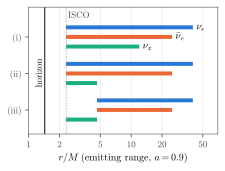
图注：自旋参数 0.9 时三种发射布局中电子中微子、电子反中微子与重轻子味中微子的发射半径范围。布局 (i) 内盘三种发射区重叠，(ii) 重轻子味限于内环，(iii) 内环与电子味发射盘互不重叠。
怎么看这张图：先看发射区内缘是否重叠，再比较哪些配对会在味转换后出现。 给出后续转换偏差扫描的几何输入。
来源与置信度：arXiv HTML；source verified；https://arxiv.org/html/2611.08742v1/layouts.svg
图 6
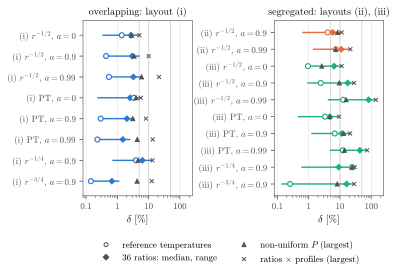
图注：相同局域速度的平直参考下，重叠（左）与分离（右）发射区的相对论转换因子分数变化。圆为参考温度，菱形及线为均匀转换时 36 组谱参数的中位数与范围，三角为参考温度的六种转换剖面最大值，叉为两种扫描交叉的最大值。竖线为 5%、10%、50%。
怎么看这张图：横向看同一符号在两种布局的移动量。交叉符号是最大值，不能读成误差条。 比较几何与光谱、转换处方对近似可分离性的影响。
来源与置信度：arXiv HTML；source verified；https://arxiv.org/html/2611.08742v1/flavour_robustness.svg
图 7
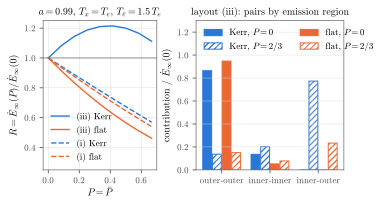
图注：自旋 0.99、重轻子温度等于电子中微子温度、电子反中微子温度为其 1.5 倍的示例。左为同局域速度下 Kerr 与平直的转换因子，实线为分离布局、虚线为重叠布局。右为分离布局按两个粒子起源的内环、外盘拆分沉积，以未转换总量为单位，实填和斜线分别表示未转换与味均分。
怎么看这张图：比较左侧均分端对基线 1 的偏差，再看右侧 Kerr 中跨区配对比平直增加的份额。 直接连接转换效应翻号与跨区湮灭对的引力增益。
来源与置信度：arXiv HTML；source verified；https://arxiv.org/html/2611.08742v1/flavour_reversal.svg
强相关工作
Salmonson 与 Wilson 的静态球解析核给出从球面紧致度到沉积增益的基准，本文图 1 用同一固定无穷远发射光度口径重现它。Birkl 等的黑洞球/盘发射器蒙特卡洛则检验非球几何，本文表 1 先复用旧积分定义验证，之后才对比采用 Killing 能量定义的差异。检索词为 neutrino pair annihilation、spherical cone、Kerr ray tracing。
Zalamea 与 Beloborodov 将时间平移守恒量用于超吸积黑洞的中微子加热，本文附录 A 采用相同能量投影并保留方位动量。Just 等的中微子冷却盘流体计算研究快速味转换的处方，本文将其中的轻子数条件作为整体变体，对照均匀概率方案。真实发射区域和转换发生位置仍要借助这类辐射流体工作提供。
同一事件 / 同类源线索：
（未提供）
相似工作：
基础理论 / 方法工作：
- https://doi.org/10.1086/307232
- https://doi.org/10.1051/0004-6361:20066293
- https://doi.org/10.1111/j.1365-2966.2010.17600.x
相反观点 / 张力线索：
（未提供）
2. A possible connection between the ridge and hypotenuse in the bispectrum of black hole X-ray binaries through quasi-periodic modulation
- 来源：arXiv / astro-ph.HE
- 链接：https://arxiv.org/abs/2611.09635
- 作者：Pei Jin, Mariano Méndez, Federico Garc\'ıa, Diego Altamirano, Haifan Zhu, Liang Zhang, Guobao Zhang
- 公告 / 来源日期：2026-11-09
- 阅读层级：重点精读
- 评分：novelty 8/10，importance 8/10，relevance 9/10，final 9.35/10
- 推荐理由：乘法耦合同时预测双谱脊线与斜线的相反双相位，NICER两个双星有一致的定性符号及可指出的模值残差，提出超越双相干幅度的检验。
中文题目：黑洞双星的准周期振荡怎样耦合宽带噪声：用双相位检验频率侧带
做了什么：黑洞 X 射线双星的准周期振荡（QPO）在普通功率谱上是一处窄峰，但功率谱不能告诉我们这处峰与宽带随机起伏之间是否稳定交换相位。本文假设一个与 QPO 锁相的响应乘在原有光变上，使宽带波动在傅里叶域复制到相距一个 QPO 频率的侧带。由同一次乘法，既会产生固定一个频率的横纵脊线，也会产生两个频率相加等于 QPO 频率的斜线。沿两条线，复双谱相位应近似异号，第二谐波有同样的配对关系。
作者把 NICER 的 Swift J1727.8−1613 三组和 MAXI J1820+070 一组观测切成 24 秒片段，逐段计算频率三元组后平均。两颗源的双相位图都出现了与脊线、斜线相配的异号趋势，即使有些结构在归一化双相干图上不明显。以独立比例因子缩放的功率谱项能复现多数沿线模值的宽带形状，基频与谐波相交区域仍有残差。数据支持乘法耦合的可行性，尚无对双相位差的定量联合检验。
为什么重要：此前同类双相干图常按十字、斜线或网状形貌命名。形貌容易随归一化分母和局部信噪变化，模型若只匹配这些图案，很难确定各线是否共享成因。双相位提供可核验的符号关系，把问题转为同一调制是否同时产生两条相互联系的频率轨迹。
理论 / 观测 / 仪器方法价值：可复用的是从同一批事件计算复双谱、双相干、双相位和归一化分母，并用独立测得的功率谱预测沿线形状。输入需要在单段内近似平稳、频率分辨率足以追踪 QPO 的光变。对交点做模型比较时，应先在复平面相加各个分量，最后再取模。
为什么应该关注：对有足够高时间分辨率的高能双星，可将同一方法按能段和吸积状态分组，比较宽带调制、反射与康普顿化响应。需要同步检查平均段数、QPO 漂移和计数噪声。在伽马能段计数稀疏的目标中，可先用保留功率谱的随机相位模拟量化假结构，再尝试跨能段联合估计。
展开详细解读：文章讲解、背景、理论、重点章节、图表与相关工作
文章详细讲解
科学问题。 QPO 在宽带噪声上形成的脊线与斜线，是否代表两个物理过程？功率谱仅度量单个频率的平方振幅。双谱把两个频率与其和频的复振幅相乘并跨段平均，只有三者的相位组合持续保持一致，才会留下稳定的复信号。本文把这个相位组合用作区分模型的观测量。
作者怎么做。 理论上把观测光变写成内禀光变乘以带 QPO 基频和二次谐波的响应。独立高斯宽带分量自身的三阶矩为零，乘法把同一傅里叶成分移到相邻频率，产生可平均的三元组。实际把 NICER 光变按 24 秒分段，计算平方双相干、双谱模值和双相位三套图，并对单条结构的模值沿线比较。
关键结果。 Swift J1727.8−1613 的 1.25 Hz 观测中，归一化图接近十字，模值和双相位图却更像网。基频脊线双相位约 $\pi/2$，斜线约 $-\pi/2$ 至 $-\pi$，谐波脊线与斜线约 $\pi/4$ 和 $-\pi/4$。MAXI J1820+070 的归一化图没有清楚的传统图案，但基频两条结构也呈现正负双相位。这里检验的是相位符号趋势，幅度是否完全相等未做推断。
局限和下一步。 弱调制展开只保留一阶，模型把 QPO 谱线作窄线近似，并设宽带内禀三阶耦合为零。所用两源四组光变的定性相位并不足以判定整个种群，也不能判断乘法中谁调制谁。可复核的下一步是相位随机化空检验、跟随 QPO 漂移对齐以及把交点处多个复分量和能量相关滞后放进同一次拟合。
关键结果是怎么做出来的
先由独立频率分量构造相位诊断。复双谱采用 $X(\nu_1)X(\nu_2)X^*(\nu_1+\nu_2)$，共轭确保随机段起点引起的整体时移相位抵消。如果两个输入频率和输出和频无固定关系，复乘积会在平面旋转并平均减弱。双相位是平均后的复数方向，平方双相干再对该复幅度归一化。
再看同一调制如何产生两条线。脊线固定输入频率为 QPO，调制把普通频率 $\nu$ 搬运到输出 $\nu+\nu_0$，共轭输出使调制相位以负号进入。斜线固定输出为 QPO，调制把负频端的 $\nu_1-\nu_0=-\nu_2$ 搬进输入，实信号的负频分量与正频共轭，因此与另一输入形成一份正的功率项，调制相位符号反过来。
观测选择给出具体灵敏度边界。Swift 三组基频约 0.88、1.25、2.54 Hz，分别用 221、513、438 段。MAXI 一组约 0.75 Hz、217 段。两源分别用 0.5–12 与 1.5–12 keV，MAXI 去掉更软光子以改善双谱信噪。高频 Swift 组的基频在观测中漂移约 2–3 Hz，固定频率图中的加长结构可部分由此产生。
三图对照决定何时能看出线。以 Swift 1.25 Hz 为例，双相干归一化的分母本身也有网状结构，可能压低斜线；模值则会偏向大振幅区。双相位沿特定频率路径成片同号或异号，为弱结构补充信息。MAXI 样本说明单靠传统图案标签会丢失这种相位线索。
最后从图中沿脊线、斜线截取模值并独立缩放候选形状。宽带形态可由傅里叶功率三元组、双侧带模型或单侧近似共同重现。基频与二次谐波附近，特别是斜线与脊线的交点，单线模型残差增大。复矢量叠加可以解释残差产生的位置，本文没有对各矢量相位和幅度同时求解。
展开背景、理论、公式、模型和章节导读
背景知识
黑洞双星的吸积流在不同能谱状态下常出现从缓慢漂移到窄峰振荡的多时间尺度变化。准周期振荡比严格周期信号多一个有限频宽，反映其频率和相位寿命。对单条观测的折叠或功率谱可测频率和宽度，却无法定位窄峰是否调制了其他时间尺度。
功率谱取傅里叶振幅的模方，抛掉绝对相位。交叉谱用于两个信号同一频率的相位差，双谱则检查一个信号不同频率的三阶相位关系。它尤其适合检验由乘法生成的和频或差频侧带。
双相干把复双谱模值归一化，便于比较不同频率的相干程度。归一化分母本身随功率谱形状而变，且有限样本的噪声会留下偏置。读图需要同时看双相位、模值、分母和数据分段，不能直接把图案亮暗解释为物理作用的强弱。
硬态和中间态中的低频 QPO 有多种物理解释，例如热电子冕参数起伏或内流几何进动。它们可以让响应系数随 QPO 相位变化，再把原有宽带扰动调制到侧带。文中的乘法是这种机制的通用数学近似，具体响应是否出自冕层需光谱与能量分辨时延支持。
基础理论 / 方法脉络
段内傅里叶变换把每个光变频率写成复数。双谱把两个频率相位之和减去和频相位，随段重复的部分才会留下。光变若仅包含独立零均值高斯宽带分量，理论三阶矩平均为零，因而这个模型把可测结构归因于引入的锁相调制或基频与谐波之间的内禀相位关系。
时域乘法对应频域卷积。一条频率为 $\nu_0$ 的余弦有正负两个傅里叶分量，因此会把原始谱向左右各移一次。调制相位随这两份复制而进入，配对时会因所在的输入或共轭输出位置获得不同符号。
斜线的存在依赖实值信号在负频端的镜像。对于两个正频之和等于 QPO 的三元组，移动一个输入到基频另一侧恰可对应第二个输入的负频。配对变成功率而非随机相位项，故与脊线共享一个调制机制。
在两条线相交处，独立的基频调制、谐波调制和潜在内禀基频—谐波耦合都可能存在。复谱必须按向量叠加，某一成分既可能把模值推高也可能抵消。此处的残差不能直接译成哪一项耦合缺少了多少能量。
双相位作为弱结构诊断也有边界。接近零的复幅度可以产生随机相位，成片同号须结合基准噪声与相邻频率相关性判断。数据的有限相干时间、反射和能量依赖传播可使一条线上的相位随频率变化。
公式与推导
1. 构造复双谱。 原文式 (1)。$X$ 是每段光变的傅里叶振幅，频率单位 Hz，括号为分段平均。三因子依次保留两条输入与和频的振幅和相位。
2. 提取两种读图量。 原文式 (2)–(3)。双相位以弧度报告，归一化的平方双相干无量纲。分母 $D$ 可单独作图，识别模值与归一化形貌为何不同。
3. 定义乘法与锁相。 原文式 (4)–(7) 的基频部分。$s$ 是含 QPO 和宽带噪声的光变，$u$ 是无量纲调制幅度，$a$ 是 QPO 的光变振幅，$\Delta$ 为调制相对 QPO 的相位。
4. 拆分侧带。 原文式 (8) 的基频部分，$\psi_m=\psi+\Delta$，$S$ 为 $s$ 的傅里叶振幅。两项分别是上移和下移。谐波项用 $2\nu_0$ 做同样展开。
5. 推出脊线。 原文式 (10)–(13)。在 $X^*(\nu+\nu_0)$ 中配到 $S^*(\nu)$，使一条贡献成 $|S(\nu)|^2$，另一条来自输入项的下移。保留一阶调制，用 $P(\nu)\simeq\langle|S(\nu)|^2\rangle$，相位取负。
6. 推出斜线。 原文式 (16)–(22)。当两频率和为 $\nu_0$，$S(\nu_1-\nu_0)=S^*(\nu_2)$，$X(\nu_1)$ 的上移项和 $S(\nu_2)$ 结成功率项。这次共轭位于 QPO 因子。
7. 交点加复数。 按原文 §2.6 和附录 A 汇总，在 $(\nu_0,\nu_0)$，基频脊线和谐波斜线同时出现。如果谐波相位与基频锁定，另有式 (33) 的内禀项。$a_1,a_2$ 是 QPO 振幅，$\Delta_{12}$ 是谐波相对两倍基频相位的偏移。
8. 拟合沿线模值形状。 原文式 (34)。$F_i$ 为候选模型量，$\sigma_{|B|,i}$ 与 $\sigma_{F,i}$ 分别为对应误差，比例 $A$ 吸收量纲和归一化。比较 $|B_i|/(AF_i)$ 观察局部残差。
模型拟合 / 应用方法
NICER 清洁事件使用 HEASOFT 6.35 和 CALDB v20220331。每段 24 秒提供约 0.042 Hz 的基础频率间隔，多个观测段以复数乘积平均。作者对平方双相干减去有限样本偏差，图 1–5 保持原频率网格。这有利于识别线状结构，也让噪声较强区域的相位散布可见。
沿脊线取值在垂直方向用相对宽度 0.2 平均，斜线则在垂直于斜线的方向平均。附录 B 检查了先求模再平均与先平均再求模的差异，主要趋势一致。附录 C 检查不同宽度。附录 D 说明部分观测的频漂，固定坐标平均会涂抹窄带特征。
模值有正噪声底，脊线比较减去 30–50 Hz 的平均值作为近似背景。该操作假定该段的内禀信号可忽略。频率超过约 10 Hz 后实测散布明显，不能把减底后的每个点当成无偏估计。
对功率三元组、双侧带预测、单侧近似分别拟合幅度比例。各形状在同一范围内相似，特别当 $P(\nu+\nu_0)$ 已远小于 $P(\nu)$ 时，双侧与单侧在数据上退化。拟合比例用于对齐形状，无法直接给出 $u$ 或几何角。
作者观察相位符号，但没有联合拟合全频复双谱，也未给出样本外检验或量化互为相反数的精度。若加入更强调制、内禀宽带非高斯相位耦合和传播延迟，需要把观测间段数、频漂与能量响应都传播到不确定度。
重点章节 / 结果段落怎么读
- §2.1 先写出功率谱与复双谱的差异，分别找出图 1 三个面板用了双谱的哪个信息和分母。
- §2.2–2.5 追踪同一余弦调制的正负侧带。先在脊线找输出共轭，再在斜线用实信号负频镜像，解释双相位为何异号。
- §3.1 对照 Swift 图 1 和 MAXI 图 5，同时翻看图 2 的分母。确定观察到的是相位的定性规律，源与观测的能段不同。
- §3.2–3.5 看独立比例缩放后的沿线模值和残差。用 §2.6 与附录 A 识别哪些灰色区在比较多个复分量。
- §4 与附录 B–D 核对高斯、弱调制与有限频宽的适用条件，分别检查平均顺序、取线宽度和观测内频漂。
关键图表与解读
图 1
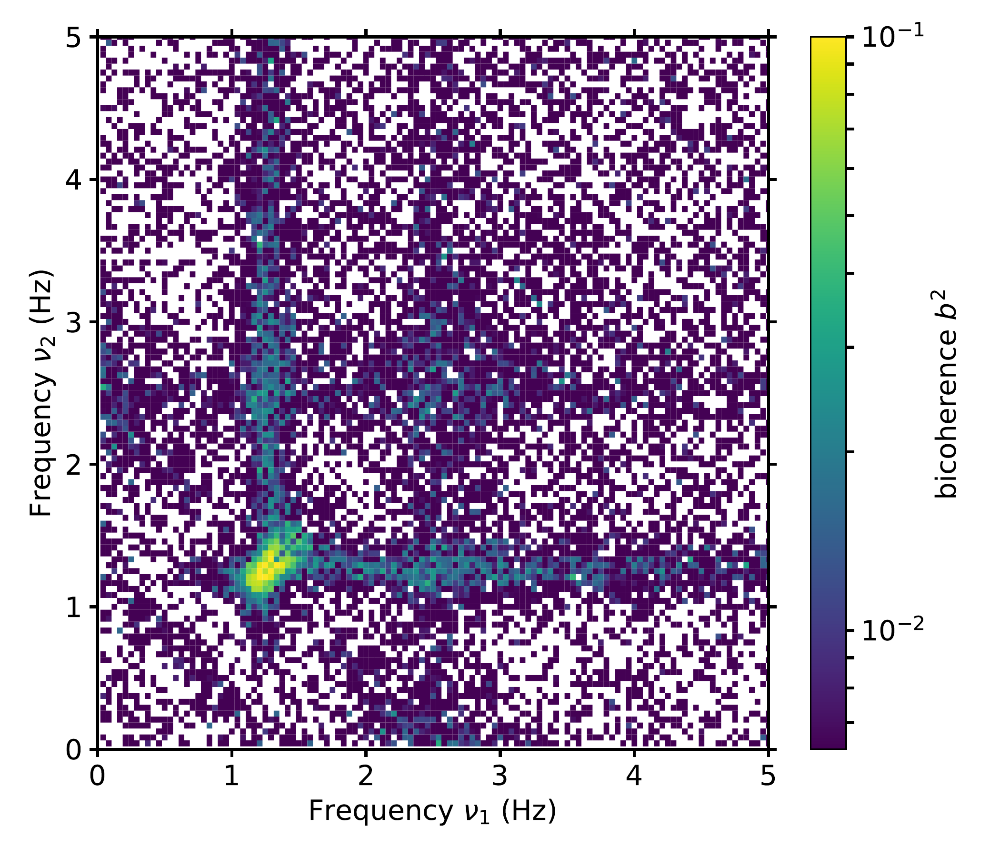
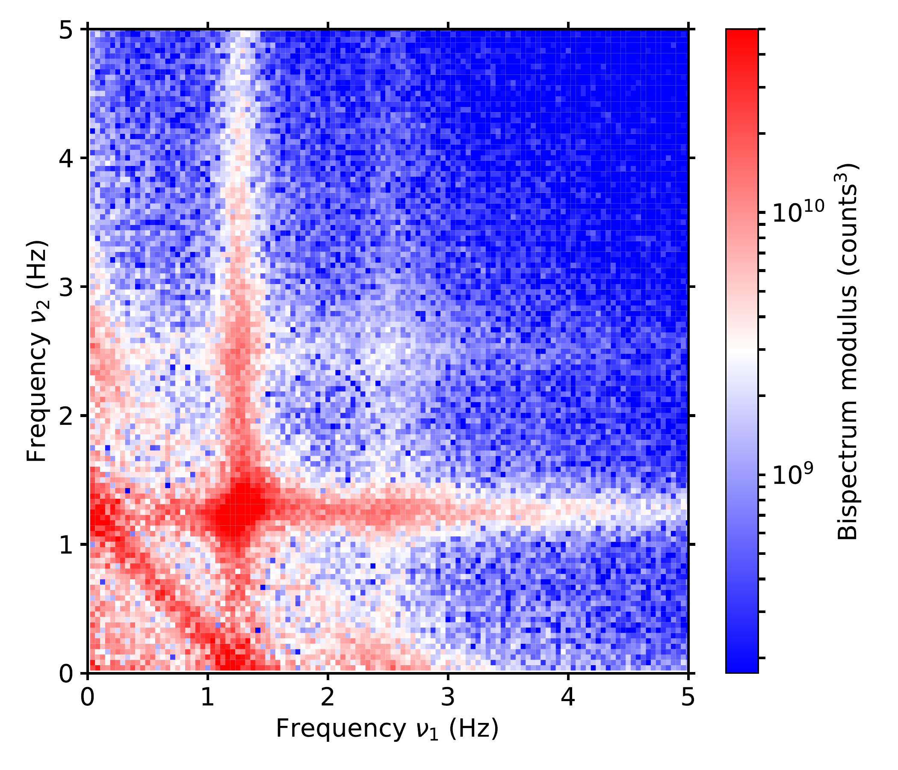
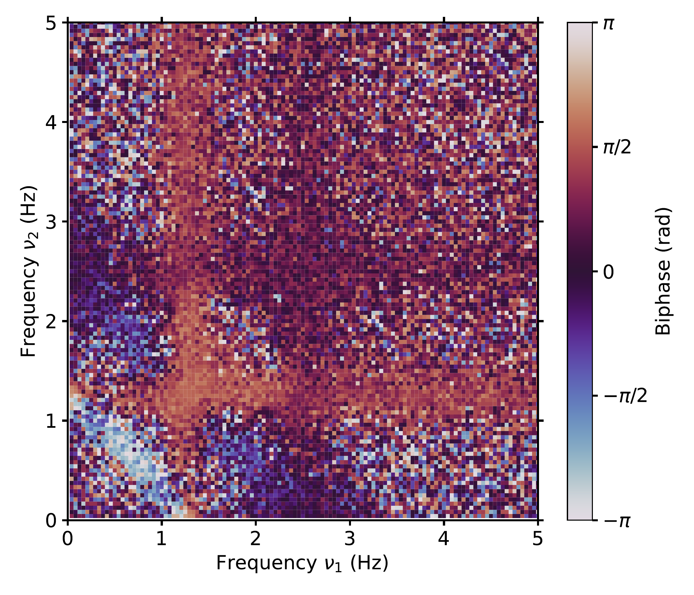
图注：Swift J1727.8−1613 的 NICER 观测 6203980109，QPO 基频 1.25 Hz。两轴为组成双谱的两个傅里叶频率（Hz）。左、中、右依次为双相干、双谱模值和双相位。
怎么看这张图：对照左、中图斜线显隐，再看右图脊线与斜线分别对应的相位符号。 同一观测直接比较三类统计及相位预测。
来源与置信度：arXiv HTML；source verified；https://arxiv.org/html/2611.09635v1/ni6203980109_0mpu7_cl_0.5_12.0_bicoherence_log-1.png；https://arxiv.org/html/2611.09635v1/ni6203980109_0mpu7_cl_0.5_12.0_bispectrum_mag_log-1.png；https://arxiv.org/html/2611.09635v1/ni6203980109_0mpu7_cl_0.5_12.0_biphase-1.png
图 5
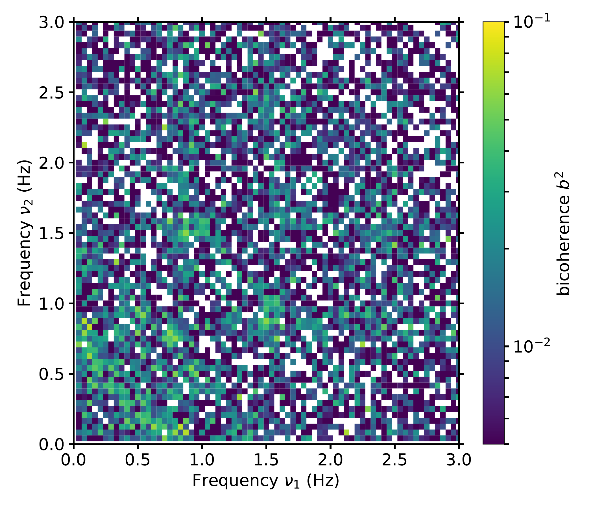
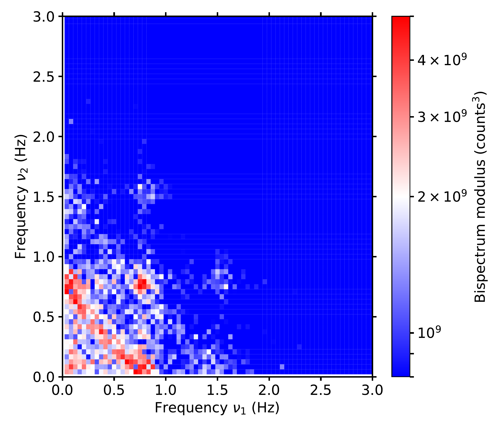
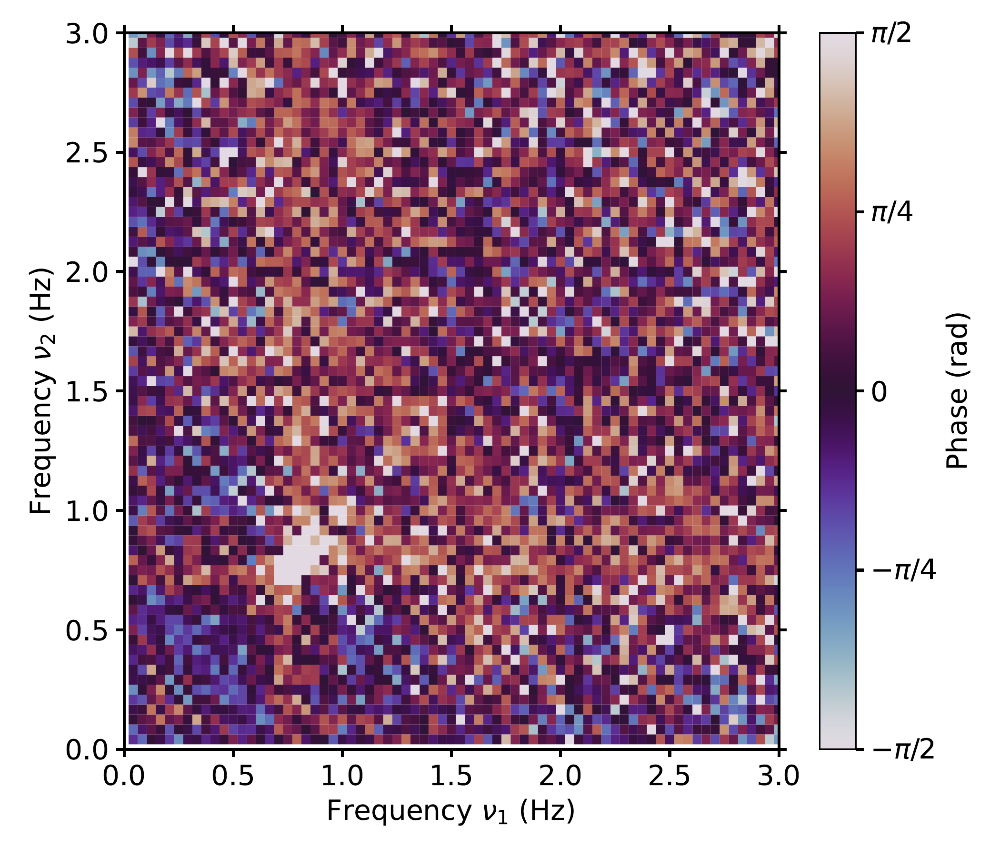
图注：MAXI J1820+070 的 NICER 观测 1200120194，QPO 基频 0.75 Hz。左、中、右依次显示两个傅里叶频率（Hz）组成的双相干、双谱模值和双相位图。
怎么看这张图：左图传统十字不明显，右图沿基频脊和斜线分别出现正、负双相位。 用独立源说明图案强弱与相位诊断的区别。
来源与置信度：arXiv HTML；source verified；https://arxiv.org/html/2611.09635v1/ni1200120194_0mpu7_cl_1.5_12.0_bicoherence_log-1.png；https://arxiv.org/html/2611.09635v1/ni1200120194_0mpu7_cl_1.5_12.0_bispectrum_mag_log-1.png；https://arxiv.org/html/2611.09635v1/ni1200120194_0mpu7_cl_1.5_12.0_biphase-1.png
图 6
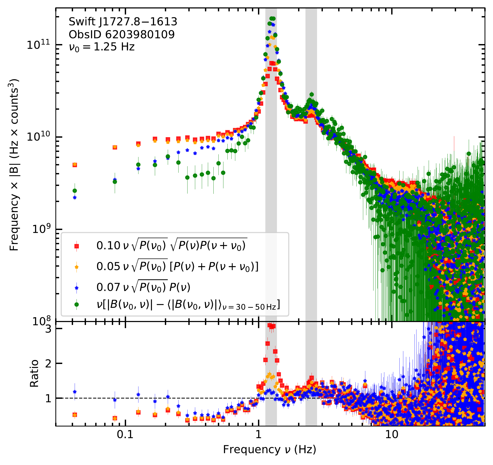
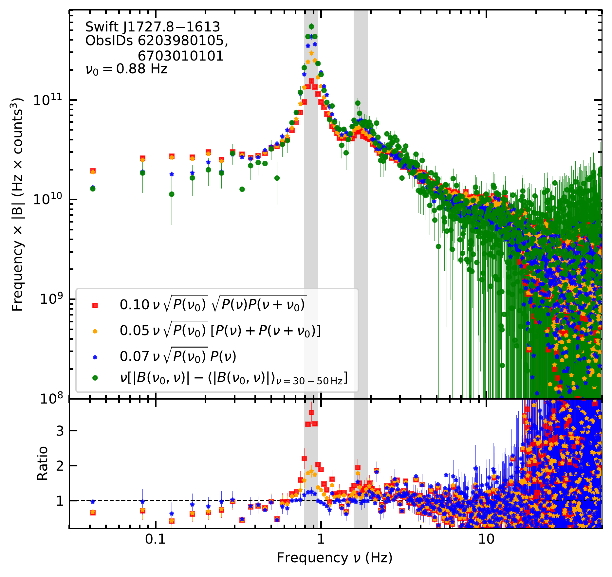
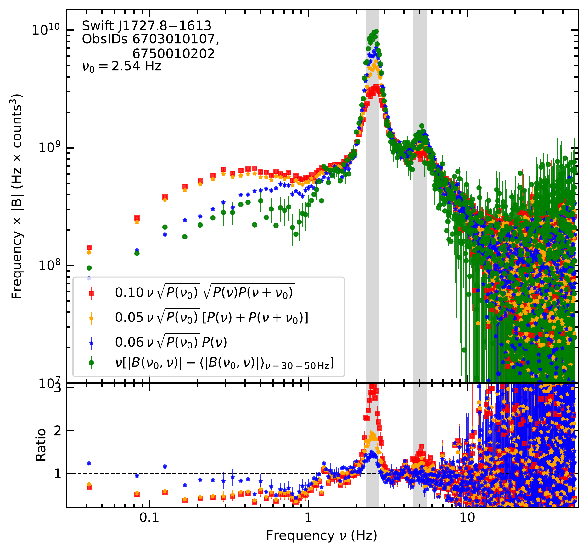
图注：Swift J1727.8−1613 三组观测沿基频脊线的双谱模值。绿色为减去 30–50 Hz 平均噪声底的模值，红为缩放的傅里叶功率三元组，橙为双侧带调制预测，蓝为缩放的单侧功率谱。下方为数据与各缩放曲线之比，灰区为 QPO 基频与第二谐波频段。
怎么看这张图：先看连续谱是否随频率同步衰减，再看灰区附近比值分离；单独脊线近似在交点失效。 展示形状比较和局部残差，限定模型能解释的频率范围。
来源与置信度：arXiv HTML；source verified；https://arxiv.org/html/2611.09635v1/ni6203980109_0mpu7_cl_0.5_12.0_pds_models_bispectrum_f0_ratio-1.png；https://arxiv.org/html/2611.09635v1/ni6203980105_0mpu7_cl_0.5_12.0_pds_models_bispectrum_f0_ratio-1.png；https://arxiv.org/html/2611.09635v1/ni6703010107_0mpu7_cl_0.5_12.0_pds_models_bispectrum_f0_ratio-1.png
强相关工作
Maccarone 与 Coppi 的高阶时变分析给出双谱估计和有限样本偏置的基础。Arur 与 Maccarone 随后在 GRS 1915+105 识别十字、斜线和网状双相干，并考察与射电和 X 射线状态的联系。本文把判断从归一化形态延伸到复相位，建议对旧分类做相同的复谱复核。
同批 Larner 的工作也用乘法调制产生各类结构，加入对数正态流量的二次宽带耦合和非相干稀释来解释状态与倾角变化。他用 1116 组同模型的模拟改变 QPO 幅度和稀释强度，在检出双相干的子集中约 96% 符合解析分类。该比例验证模拟模型内部的近似判据，倾角关联仍需独立观测。本文的特长是给出复相位符号预测并以 NICER 观测比对。两种模型的底层宽带统计不同，可结合模值、相位和多能段响应比较。
同一事件 / 同类源线索：
相似工作：
基础理论 / 方法工作：
相反观点 / 张力线索：
（未提供）
3. XMM-Newton observations of the highest field polar AR UMa: An extreme case of soft-blobby accretion
- 来源：arXiv / astro-ph.HE
- 链接：https://arxiv.org/abs/2611.09556
- 作者：Kala G. Pradeep, Axel D. Schwope
- 公告 / 来源日期：2026-11-09
- 阅读层级：重点精读
- 评分：novelty 8/10，importance 8/10，relevance 8/10，final 9.00/10
- 推荐理由：最高场强极星AR UMa首次XMM高态的谱时证据区分吸积热斑、恒定稀薄等离子体、吸收跌落和UV回旋候选，可检验强磁场团块吸积的能量收支。
中文题目：高磁场极星 AR UMa 的吸积能量去了哪里？软 X 射线、团块流与磁层激波
做了什么：Pradeep 与 Schwope 在 AR UMa 罕见的高吸积态触发 XMM-Newton，连续覆盖约六个完整的 $1.93$ 小时轨道，并配合紫外和地面 $i$ 波段观测。AR UMa 是一颗强磁场吸积白矮星。作者用轨道相位分开靠近视线的吸积热斑、持续的稀薄等离子体和在热斑前扫过的吸积流，逐一比较各波段的时间与能谱变化。
亮相约占轨道的 35%，主吸积极区的辐射由 $kT_{\rm bb}\simeq35$ eV 的黑体样成分主导。未检出与之同步的硬 X 射线吸积柱成分。全天相另有约 1 keV 的弱薄热等离子体辐射，作者将其归于吸积流接入磁层时产生的激波。软 X 射线的吸收谷逐圈变形，支持不均匀团块流。紫外差谱还出现与约 160 MG 的南极回旋三次谐波相容的宽凸起。
为什么重要：白矮星表面上方的驻立激波通常会留下薄热硬谱，只有部分能量经光球再处理成为软 X 射线。AR UMa 的高态观测把强软热点与弱等离子体分开，说明高磁场端可能由能在光球内埋藏激波的高局部密度团块主导。弱等离子体在主热斑转离视线后仍可见，使磁层接流处的耗散有了可单独检验的观测窗口。
理论 / 观测 / 仪器方法价值：最有用的方法是把每一圈的吸收谷和同圈最少遮蔽的亮相配对。这样估算柱密度时可以控制本征热斑亮度逐圈变化。再通过软硬能段相位曲线区分几何自遮挡、能量选择性的光电吸收和真正的辐射成分变化。相位分辨的紫外差谱则可以消去稳定连续谱，突出随磁极视角改变的弱谱特征。
为什么应该关注：强磁白矮星是连接紧致天体磁层动力学和实际多波段光变的低成本观测对象。对吸积天体做周期分析时，AR UMa 的软带谷提供了一个具体对照，轨道内重复出现但相位游走的遮蔽可以在功率谱上形成分钟尺度结构。联合能谱、相位与硬度能帮助判断一条周期峰能否支持某个内禀振荡机制。
展开详细解读：文章讲解、背景、理论、重点章节、图表与相关工作
文章详细讲解
科学问题。强磁场将从伴星流出的物质导入白矮星磁极，气体最终怎样失去重力势能？表面上方的强激波会产生硬辐射，埋在光球内的冲击则更容易表现为软热辐射。作者用高态 AR UMa 检验这两个能量通道，并追踪物质何处接入磁层。
作者怎么做。2023 年 5 月 9 日目标触发观测同时取得 EPIC 计数、RGS 高分辨光谱、光学监测器（OM）快速紫外光变和光栅谱，地面 70 cm 望远镜提供约 4.5 小时的光学光变。研究按伴星下合定义相位零点，把亮相、暗相和流遮蔽区间分开，再用能段依赖性检验吸收。
关键结果。亮相黑体约 35 eV，在 EPIC MOS-1 与 pn 的最佳模型中，去吸收的软黑体总通量为薄等离子体成分的 526 至 602 倍。薄热成分在暗相的通量近似相同，且其计数变化未追随软热点。主吸收谷的平均范围约为 $\phi=0.80$ 至 $0.845$，六圈均能辨认，内部小谷和最低点却逐圈移动。冷吸收模型给出的柱密度约为 $(0.2\text{--}1.3)\times10^{22}\,\mathrm{cm^{-2}}$。
局限和下一步。光变和能谱共同支持埋藏激波与团块流。把常见的约 1 keV 等离子体定位在停滞区、估计流的厚度和质量转移率，还需要吸积流几何、视倾角与组分假设。高态只测到一次短观测窗口。后续高态可用多轨道同步光谱比较不同相位的磁极特征、热斑温度和吸收谷，检验解释是否能跨事件复现。
关键结果是怎么做出来的
先看图 2 和图 3。亮相在 $\phi=0.58$ 至 $0.93$，软带计数显著上升。1–15 keV 计数较弱，缺少和 0.15–1 keV 主成分一致的升降。两个波段的分离为随后拆解能谱提供了时间证据。
图 7 将多圈亮相与暗相分别叠加。亮相排除吸收谷，EPIC 与 RGS 的数据共同支持强软热成分。暗相保留了类似的薄等离子体通量，因此可用暗相拟合来估计非热点的背景辐射。图中约 35 eV 温度由可测能区的模型拟合推断，观察能区与温度尺度的差别使低能响应和吸收尤其重要。
图 8 对照六圈的流吸收谷。平均光变出现宽 V 形谷，每圈实际有不同的细结构和中心位置。硬带几乎没有对应谷，符合光电截面向低能快速增大的行为。作者用图 9 所标的同圈基线与谷底软带计数，在固定谱形的吸收网格上反推各圈 $N_{\rm H}$，图 10 与表 2 给出相应变化。
紫外光栅有四段曝光。2000–3600 Å 的单独和合并光谱里看不出清楚的回旋宽峰，按相位相减后才在 2250–2450 Å 出现凸起。此时南磁极更接近视线，作者用相位支持约 160 MG 南极的三次谐波解释。先前模型也给出相近波长的 230 MG 磁极二次谐波，所以单靠峰位置存在场强与谐波阶数退化。
光学动态功率谱有约 12.6 分钟结构及间歇的约 5.1 分钟结构，紫外约 4.1 分钟信号较弱，软 X 射线还出现约 14.5 分钟的候选结构。作者认为后者可能与亮相吸收事件有关。有限长度和不同相位覆盖限制了把这些候选周期归于同一个振荡器的能力。
展开背景、理论、公式、模型和章节导读
背景知识
极星是磁场足够强的激变变星。低质量伴星填满洛希瓣后，物质经内拉格朗日点 L1 流出。白矮星磁矩让自转接近轨道同步，并在通常能形成稳定吸积盘之前接管气流，因此观测者在不同轨道相位会看到不同位置的吸积足迹。
吸积流先受双星引力控制，动压下降到接近局部磁压时，物质可被磁场导引。磁力线把气体集中到白矮星表面很小的面积。同一总质量转移率可以由一大片较稀薄的流或少量极高质量通量的团块提供，两种情况下激波高度和冷却通道可以很不一样。
经典驻立激波位于光球上方。撞击后的热等离子体可通过自由—自由辐射和回旋辐射散热，朝下的辐射再被表面吸收并形成软成分。高密度团块能钻入较深光学深度，热量更有效地热化，硬谱直接逃逸受到压制。
AR UMa 距离约 98.6 pc，消光小且高态少见。此前低态紫外谱有助于看到白矮星本身，较早的高态极紫外数据已经提示软热辐射。这次高态亮度约 V=13.8，XMM-Newton 同一场观测把光变、能谱和跨波段相位信息连到一起。
基础理论 / 方法脉络
磁层接流是第一个耗散位置。流的动压与偶极磁压可作为耦合半径的量级判据，真正的接流还取决于流截面和磁拓扑。接近耦合区的激波速度低于近白矮星表面的落速，所以热尺度可以只在约 keV。
接流处受压和冷却后，密度可以增大。稠密流在不同层间交换时可能碎成团块，被磁力线携带的团块继续受压或拉伸。到达表面时，局部单位面积质量流率足以把耗散层压进光学厚区域，这给出软成分增强的物理图像。
相位同时影响可见度和视线吸收。热斑在星缘后消失会改变其所有光子能量的可见通量。视线穿过冷流时，光电截面对软光子的作用更强。正因如此，把硬度和两条计数光变放在一起比用单一总光变更能定位吸收谷的物理性质。
约 35 eV 的黑体亮相成分说明热点热化强。暗相仍存在较软的热成分，作者倾向由南极较冷且范围更大的足迹提供，也讨论了北极吸积的可能。紫外回旋频率随磁场成比例，波长位置与视角调制联合才能进一步辨认是哪一个磁极。
公式与推导
1. 从流的动压估计磁场开始控制的位置。 以下为 §1、§5.2 的压强判据。采用 cgs，$\rho_s$ 为流质量密度，$v$ 为近似弹道速度，$B(r)$ 为耦合处场强，两边同为 $\mathrm{dyn\,cm^{-2}}$。原文用考虑流几何的 Lamb 标度估得 $R_\mu^{\rm st}\simeq(2.15\text{--}2.35)\times10^{10}$ cm。
2. 由耦合半径估激波温度。 教学近似。强激波上游速度为 $v_{\rm sh}$ 时，理想单原子气体的平均热粒子质量为 $\mu m_p$。取自由落体速度的量级可见温度随 $M/R_\mu^{\rm st}$ 增大。§5.3 用流模型估得约 1.3 keV，和观测的薄热等离子体相近。
3. 区分总流量和团块局部流量。 教学质量守恒。若团块撞击速度为 $v_{\rm imp}$、密度为 $\rho_{\rm blob}$，则局部质量流率的单位为 $\mathrm{g\,cm^{-2}\,s^{-1}}$，用面积积分才得到总 $\dot M$。§5.2 的压缩模型给出很高的局部流率，为激波埋入光球提供可能。
4. 把吸收柱密度映射到软带衰减。 §5.4 的光电吸收近似。$N_{\rm H}$ 用 $\mathrm{cm^{-2}}$，每氢核的有效截面 $\sigma_{\rm pe}$ 用 $\mathrm{cm^2}$。宽能区内 $\sigma_{\rm pe}$ 大体随 $E^{-3}$ 下降，吸收边附近须使用实际截面模型。$\tau$ 无量纲。
5. 用硬度和计数响应识别吸收。 图 3 定义 $S$ 与 $H$ 为软、硬计数率。若同一亮相的本征谱近似固定，增加 $N_{\rm H}$ 主要降低 $S$，因此谷底硬度上升。逐圈估算用实际谱模型通过仪器响应映射成带内计数，避免把宽能带简单当作单一能量。
6. 从热斑通量估算能量预算。 §5.1 使用去吸收的总通量 $F_{\rm bb}$、距离 $d$，并尝试半球辐射和带倾角投影的几何。下式写后者，其中 $i=70^\circ$、热斑余纬 $\beta=142^\circ$。薄等离子体按各向同性换算。辐射几何给出的软光度范围为 $(3.95\text{--}6.39)\times10^{32}\,\mathrm{erg\,s^{-1}}$。
7. 由势能释放反推总吸积率。 §5.1 假定 X 射线跟踪吸积功率且该高态回旋能量份额很小。采用 $M_{\rm wd}=1.125M_\odot$、$R_{\rm wd}=4.48\times10^8$ cm 时，得约 $(1.19\text{--}1.92)\times10^{15}\,\mathrm{g\,s^{-1}}$。谷底吸收只探测视线扫到的流截面，不能用它代替此全局估计。
8. 用回旋谐波检查场强与波长。 教学估算，非相对论、cgs。$e$ 是电子电荷量、$m_e$ 是电子质量、$c$ 是光速，$n$ 是谐波阶数。160 MG 的三次谐波给出约 2230 Å 的尺度，电子运动和视角可影响实际峰形。更高场强的低阶谐波可处于相近波长，故要结合相位。
模型拟合 / 应用方法
时域分析先对事件做背景耀发过滤，再进行轨道折叠。EPIC 光变间隙源于过滤，OM 间隙来自七段快速曝光之间，解释相位覆盖时需要分别处理。吸收谷逐圈移动，作者比较相位平均与单圈结构，以保留被平均抹平的细节。
相位光谱用 Tbabs 表示吸收，软成分用黑体，薄热成分用多温 APEC 模型。暗相先确定等离子体参数，再将这组参数用于亮相。低能响应存在探测器间差异，尤其 EPIC pn 的极软端偏差和 MOS 的拟合变化。文中比较部分遮蔽与调整拟合下限的结果，保留较简洁的平均亮相模型。
RGS 对亮相合并 RGS-1 与 RGS-2，对暗相排除 RGS-1，因为约 0.387 keV 的异常只在该探测器出现。附录 B 还按圈估计黑体温度，在固定其余多项谱参数的条件下让黑体和高斯成分的部分参数浮动。温度变化需要和参数固定所带来的条件性一起读。
吸收谷分析为每圈建立基线，固定该圈的最佳谱形并扫柱密度，使通过模型响应后的 0.2–1.0 keV 计数率和谷底实测率对应。采用中性、太阳丰度吸收体及固定银河前景，故所报柱密度是模型等效量。流的部分覆盖、离化、截面或本征亮度变化都会影响由谷深反演的密度。
紫外差谱从不同相位的子曝光相减。独立曝光和合成谱用于检查宽峰是否稳健，单个宽峰本身无法确定磁场分布。Lomb–Scargle 频谱与动态谱用于看周期候选是否持续，阶段性吸收、有限时间基线和多波段非完全同步均会影响对分钟周期的解读。
重点章节 / 结果段落怎么读
§2–3.1，表 1 与图 1–3。先对照观测时间和间隙来源，随后读三波段的轨道调制以及软、硬 X 射线的不同相位行为。
§3.3，图 4–6。把整体功率谱的峰与动态谱中可见的相位区间对应，区分间歇振荡候选和吸收谷可能造成的时间尺度。
§4.1，图 7–10 与表 2。看亮暗两相如何拆解辐射成分，再追踪同圈基线、谷底计数到柱密度的计算。读附录 B 时注意仪器低能端的系统限制。
§4.2、§5。查看紫外差谱特征和场强归属，随后对照能量预算、停滞区激波温度和流吸收几何。这里将实测能谱与模型解释接起来。
关键图表与解读
图 3
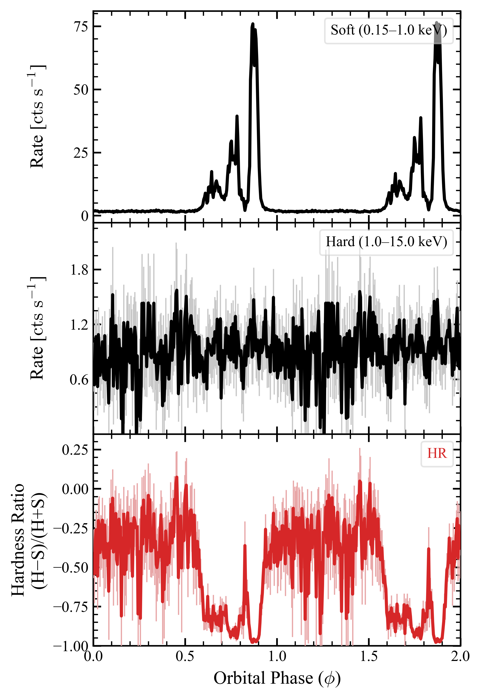
图注：XMM-Newton EPIC pn 的分能段光变，时间箱宽为 30 秒。软带为 0.15–1 keV，硬带为 1–15 keV。硬度比取 $(H-S)/(H+S)$，其中 $H$、$S$ 分别为硬带、软带计数率。
怎么看这张图：先将软带的亮相和深谷与硬带同一时刻对齐，再看谷底硬度。软带深谷而硬带缺少对应变化是光电吸收的主要时间证据。 显示软硬分量及流吸收的能量选择
来源与置信度：arXiv HTML；source verified；https://arxiv.org/html/2611.09556v1/sections/Timing/figs/PN_150_1000_15000_energy_resolved_aa.png
图 7
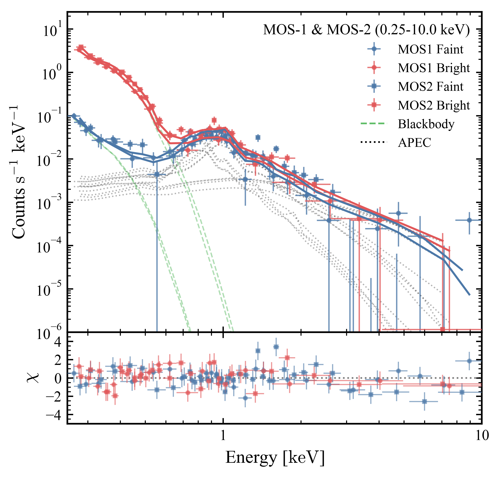
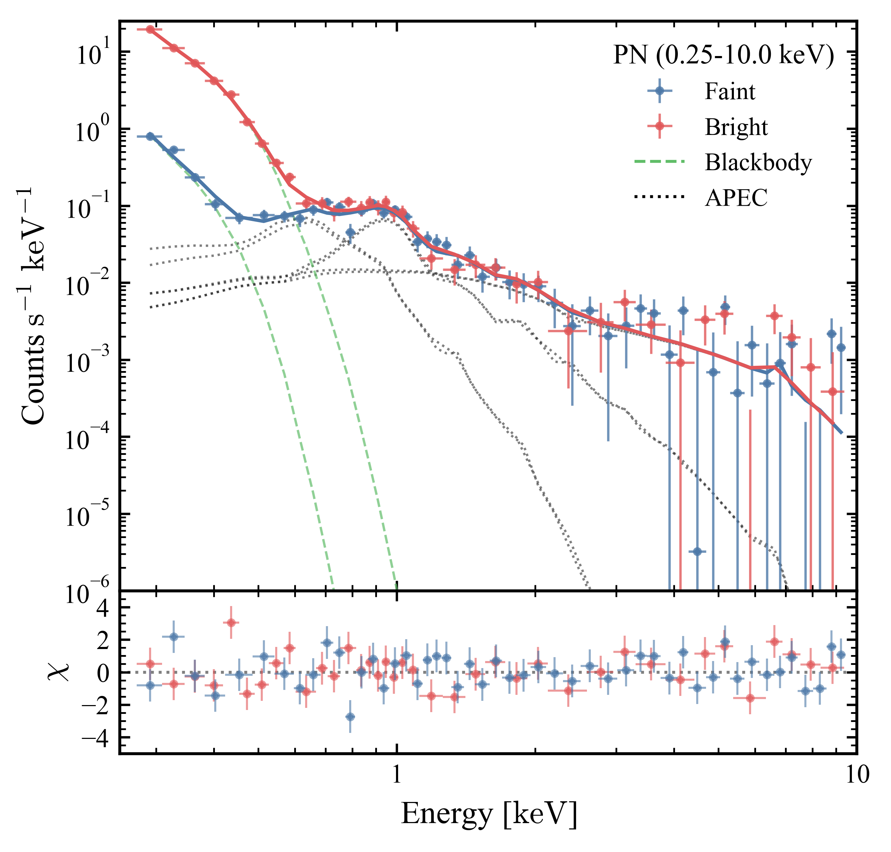
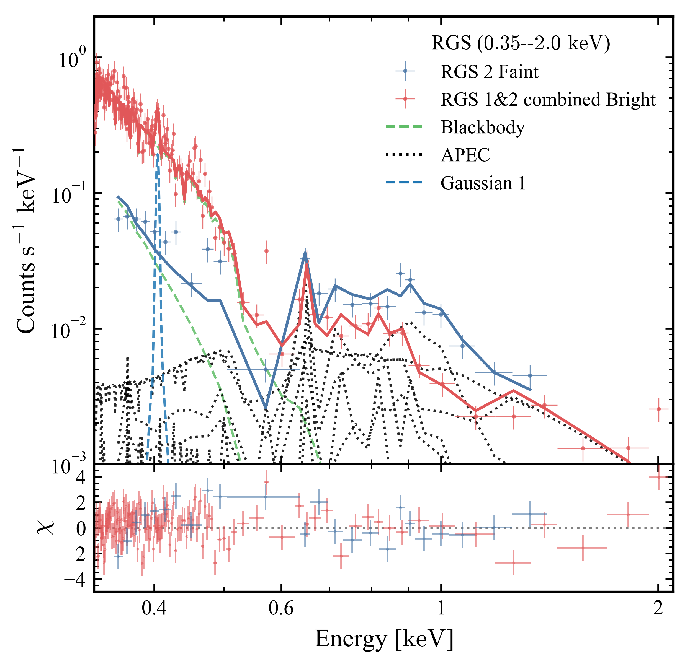
图注：亮、暗相的相位分辨光谱。从上到下为 EPIC MOS-1 与 MOS-2（0.25–10 keV）、EPIC pn（0.25–10 keV）和 RGS（0.35–2.0 keV）。RGS 亮相合并两台探测器，暗相仅用 RGS-2。蓝色为暗相，红色为亮相，实线为最佳拟合总模型，点线表示分量。
怎么看这张图：对照低能处红蓝两相的分离与高能处的接近程度。亮相需要强软分量，薄热成分在暗相仍可见。RGS 暗相的低计数和不同探测器选择应一并考虑。 分离热斑黑体和持续薄热谱
来源与置信度：arXiv HTML；source verified；https://arxiv.org/html/2611.09556v1/sections/Spectroscopy/figs/mos1_mos2_phase_resolved_components.png；https://arxiv.org/html/2611.09556v1/sections/Spectroscopy/figs/pn_phase_resolved_spec_components.png；https://arxiv.org/html/2611.09556v1/sections/Spectroscopy/figs/rgs_phase_resolved_spec_components.png
图 8
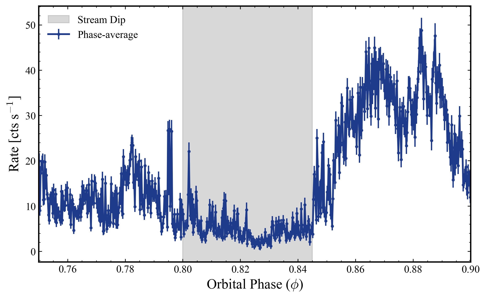
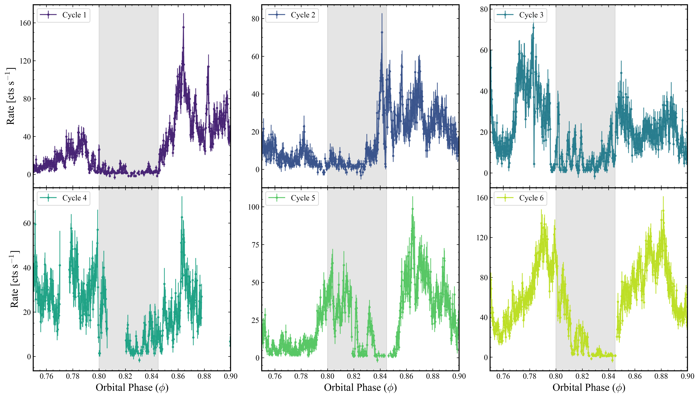
图注：上图为 XMM-Newton EPIC pn 的 0.2–1 keV 相位平均光变，灰色区域标出平均吸收谷 $\phi\simeq0.80$ 至 $0.845$。下图分面显示每一圈吸收谷在相位上的游走，灰色区域仍表示平均位置。
怎么看这张图：比较灰带与每圈最低点、边沿和小谷的位置。平均曲线压掉的细结构在单圈可辨，支持每圈穿过的流柱不同。 显示遮蔽谷的逐圈变化与子结构
来源与置信度：arXiv HTML；source verified；https://arxiv.org/html/2611.09556v1/sections/Timing/figs/pn_streamdip_phase_average.png；https://arxiv.org/html/2611.09556v1/sections/Timing/figs/pn_streamdip_3x3_grid.png
图 10
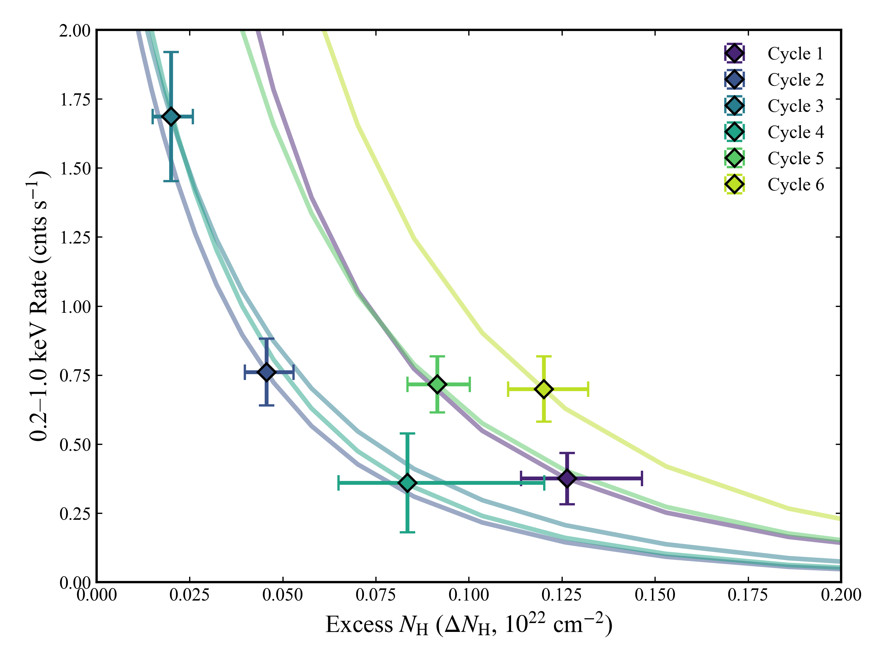
图注：遮蔽流的柱密度变化。用各圈最少遮挡基线区间的最佳谱拟合，并利用相应吸收谷底的计数率插值得到 $N_{\rm H}$。区间位置见图 9。
怎么看这张图：同一谷深也可能来自不同的本征亮度。图中的反演使用各圈自己的基线与计数率，因此应连同这个模型假设及表 2 一起看。 展示用基线谱与计数率反演的柱密度
来源与置信度：arXiv HTML；source verified；https://arxiv.org/html/2611.09556v1/sections/Spectroscopy/figs/nh_vs_rate.png
图 11
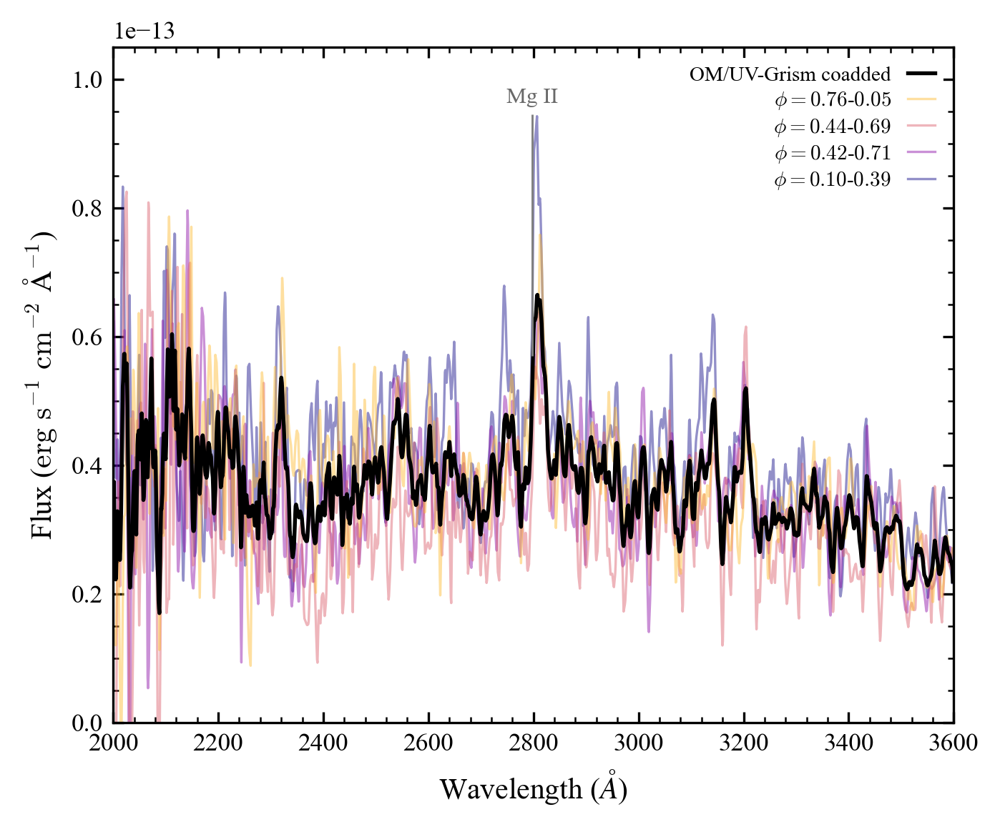
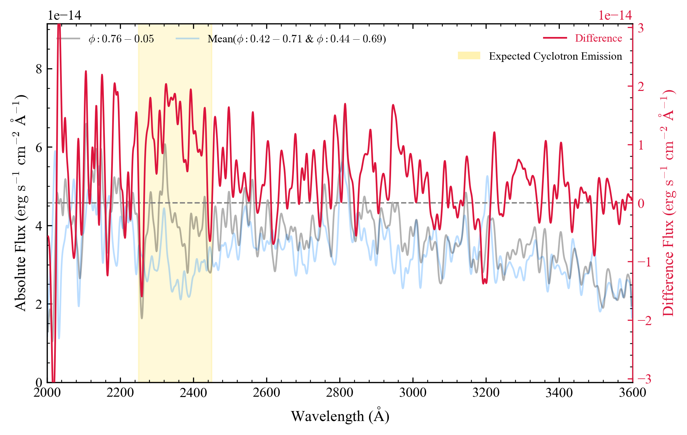
图注：XMM-Newton 光学监测器的紫外光栅谱覆盖 2000–3600 Å，黑色为合成谱，同时叠画图例所标的各次子曝光。随附面板给出平滑后的平均与差谱。
怎么看这张图：先看合成谱中宽峰有多不突出，再看差谱在 2250–2450 Å 的凸起。相位选择给出了南极归属的依据，峰波长仍存在场强与谐波阶数退化。 连接南磁极的视角与回旋候选特征
来源与置信度：arXiv HTML；source verified；https://arxiv.org/html/2611.09556v1/sections/Spectroscopy/figs/ARUMa_Coadded_Overlay_Clean.png；https://arxiv.org/html/2611.09556v1/sections/Spectroscopy/figs/ARUMa_Smoothed_Mean_Difference.png
强相关工作
Szkody 等 1999 年对同一系统的高态极紫外与 X 射线观测已经分辨出较软的辐射成分。此次更亮的高态给出较高的亮相拟合温度，并提供可与光学、紫外同时对照的多圈谱时证据。Gänsicke 等 2001 年的低态 HST 相位光谱为场强与回旋谐波的候选归属提供背景。
Schwarz 等 2005 年在 V1309 Ori 的 XMM-Newton 观测提出团块主导吸积。AR UMa 提供磁场更强的对象，且软光变吸收结构与持续薄热成分可同时分辨。Ramsay 与 Cropper 2004 年的高态极星样本显示强软过量只在部分系统中显著，使 AR UMa 更适合作为检验团块机制的极端个案。
同一事件 / 同类源线索：
- https://doi.org/10.1086/307505
- https://doi.org/10.1086/321464
- https://doi.org/10.3847/1538-4357/ad27d7
相似工作：
基础理论 / 方法工作：
相反观点 / 张力线索：
（未提供）
相关简报
1. Quasi-spherical fallback in binary neutron-star mergers: fuel and obstacle for extended emission
- 来源：arXiv / astro-ph.HE
- 链接：https://arxiv.org/abs/2611.09216
- 作者：Zhiwei Chen, Marie Cassing, Paramvir Singh, Luciano Rezzolla
- 公告 / 来源日期：2026-11-09
- 阅读层级：相关简报
- 评分：novelty 8/10，importance 7/10，relevance 9/10，final 9.00/10
- 推荐理由：模拟后处理约束可回落而不直接俘获的质量，再用射流头推进把供能和极区阻碍统一；长延展辐射能量可行性有物理输入，但未辨认真实事件机制。
中文题目：双中子星并合后的回落：次级喷流的燃料和障碍
问题、方法与结论：短伽马暴主暴之后的延展发射可持续数百秒。作者建立半解析模型，让准球形回落同时在赤道圆化供能，并在极区重新填充第一束喷流开出的通道。喷流头与内落介质作用后分成喷流主导、茧主导和闷死三类。并合磁流体模拟的后处理给出约 52% 的束缚回落物未被迅速俘获，这是可圆化比例的上界。在所选辐射处方下，喷流和茧的等向 0.3–10 keV 能量约为 $10^{49}$–$10^{51}$ 和 $10^{48}$–$10^{49}$ erg。
意义与贡献：把回落造成的喷流功率和柱密度写进同一套模型后，增加回落不必然增强可见发射。较大圆化比例和更窄的喷流有利于穿透，极区填得越满则越难突破。两类成功分支的能量与延展发射样本在数量级上相容。
可借鉴之处：可复用随时间积分喷流头、环境外缘及喷流尾的位置。这样能分别判断引擎停机前是否还有物质到达喷流头，以及头部穿出时是否足够强。模拟可进一步直接约束极区密度，而圆化比例的 52% 上界无需当作默认效率。这一做法也能解释为何同样的回落率在不同极区结构中给出不同观测后果。
局限与关注点：极区回填和次级启动时间由处方给定，回落归一化依赖一组并合模拟。能量匹配还使用约 1% 的喷流 X 射线效率和简化的茧光球模型，未拟合各次暴的时间曲线，不能据此识别实际谱成分。
图 2
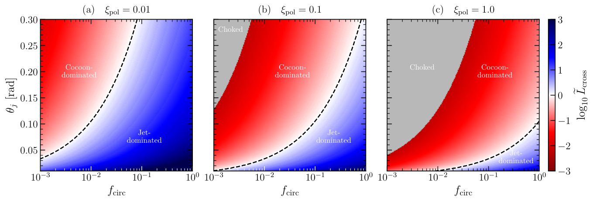
图注：圆化比例与喷流半张角的突破相图，从左到右极区回填因子为 0.01、0.1、1。颜色为穿越时喷流头无量纲亮度的常用对数，黑色虚线标出该亮度等于 1，灰区为闷死的喷流。其余参数固定为表 1 的值。
怎么看这张图：看回填增大时灰区如何扩展，并在成功穿出区域区分喷流和茧主导。黑虚线不等于闷死边界，灰区判据还取决于喷流尾能否赶上头部。 连接供能与极区障碍的三分支判据。
来源与置信度：arXiv HTML；source verified；https://arxiv.org/html/2611.09216v1/fig2.png
2. Constraints on Cosmic-Rays and the MeV Emission from Jupiter's Atmosphere
- 来源：arXiv / astro-ph.HE
- 链接：https://arxiv.org/abs/2611.09488
- 作者：Dimitris Tsatsis, Thomas Siegert, Volodymyr Savchenko, Saurabh Mittal, Laura Eisenberger, Mika A. Gelowicz, Rudi Reinhardt, Manja L. Zimmerer
- 公告 / 来源日期：2026-11-09
- 阅读层级：相关简报
- 评分：novelty 8/10，importance 7/10，relevance 9/10，final 9.00/10
- 推荐理由：22年SPI数据按移动木星配准，MC分别预测反照和宇宙线成分；当前上限距典型信号甚远，但数据处理与响应转换可服务下一代MeV观测。
中文题目：以木星大气作伽马射线转换体：INTEGRAL 的 MeV 上限
问题、方法与结论：作者在 INTEGRAL/SPI 运行 22 年的档案中找出木星落入视场的指向，逐指向建立移动点源与随距离变化的响应，联合拟合背景和五颗足够亮的干扰源。清理后有效曝光 4.08 Ms，30 keV–8 MeV 各能段与零通量相容，给出两倍标准差口径的上限。作者另用伽利略探测器的大气剖面搭建球壳模型，模拟入射光子和多种宇宙线粒子在大气中的能量再分配。
意义与贡献：反散射的宇宙伽马背景与粒子撞击产生的伽马分量可通过不同输入响应预测。上限仍比预期反照高约四个数量级、比宇宙线诱发分量高约两个数量级。当前主要结果是建立行星作为间接探针的灵敏度基线，并提供 MeV 段的非探测约束。模拟的中子俘获线主要来自质子与氦核撞击后的次级粒子，可为未来拆分宇宙线与光子反照提供谱形线索。
可借鉴之处：可复用逐指向移动源模板，以及把大气产额矩阵与望远镜响应依次卷积的步骤。三类 SPI 事件分别建背景，分析用同视场亮源检验抽谱，适合以后独立比较不同轨道阶段或扩展到其他行星。
局限与关注点：银河中心等区域因混淆被排除。宇宙线和反照的比例由入射谱与大气模型决定，真实信号仍远在灵敏度以下。联合 Fermi-LAT 的轻暗物质约束也只适用于所设长寿命媒介及蒸发条件。
图 6
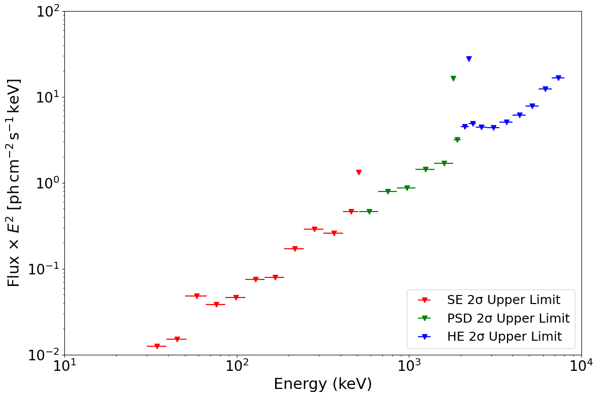
图注：SPI 从木星方向提取的逐能段两倍标准差通量上限，覆盖约 30 keV 至 8 MeV。
怎么看这张图：读作非探测的灵敏度曲线。窄核线能箱误差较大，不能将局部上限升高理解为探测到木星谱线。点位是各能箱的上限，纵轴是能量加权通量刻度。 提供所有能段的实测上限以比较模拟信号。
来源与置信度：arXiv HTML；source verified；https://arxiv.org/html/2611.09488v1/figures/FinalSpiData.png
3. Probing flavor-dependent neutrino-dark matter interactions with the flavor composition of high-energy cosmic neutrinos
- 来源：arXiv / astro-ph.HE
- 链接：https://arxiv.org/abs/2611.09037
- 作者：Ki-Young Choi, Ankhbayar Tugssaikhan
- 公告 / 来源日期：2026-11-09
- 阅读层级：相关简报
- 评分：novelty 8/10，importance 7/10，relevance 9/10，final 9.00/10
- 推荐理由：对TXS 0506+056的味依赖前向势和散射分别处理，给出绝热生存平台使截面约束松弛的机制；暗物质尖峰及味比例输入决定适用范围。
中文题目：暗物质尖峰中的中微子传播：味选择性衰减的生存平台
问题、方法与结论：作者以耀变体 TXS 0506+056 为例，设暗物质在超大质量黑洞附近形成密度尖峰，计算 100 TeV 中微子在单味前向散射势下的混合和味选择性散射。基准剖面满足绝热条件，可沿路径跟随物质本征态，再投影为地球味组成。势很弱时，每个本征态都含有相互作用味，所以三个态都会衰减。势较强时，相互作用味主要集中到一个态，另外两个态可穿过尖峰的高密部分，形成生存平台。
意义与贡献：作者同时计算总通量衰减和味比例的限制。强势可以使部分截面界限相对于弱势情形放宽数个数量级。中微子与反中微子的势同号还是异号，还会改变受影响的本征态和味轨迹。这解释了为什么只把每个源味乘以一个吸收因子会漏掉传播效应。
可借鉴之处：可在其他候选中微子 AGN 上复用两步传播。先用源区密度、能量和混合矩阵得到物质本征态占比，再沿密度剖面计算每个态的有效光深。将原始味组成与势的正负分别扫参，便于识别味比例和总强度各限制了什么。
局限与关注点：图中比较采用 IceCube 的天体中微子味比例轮廓和 90% 通量衰减判据。它们并非对 TXS 0506+056 三味的独立测量。界限依赖尖峰密度、发射半径、源味比例和 100 TeV 基准，强势平台也随能量和剖面变化。
图 9
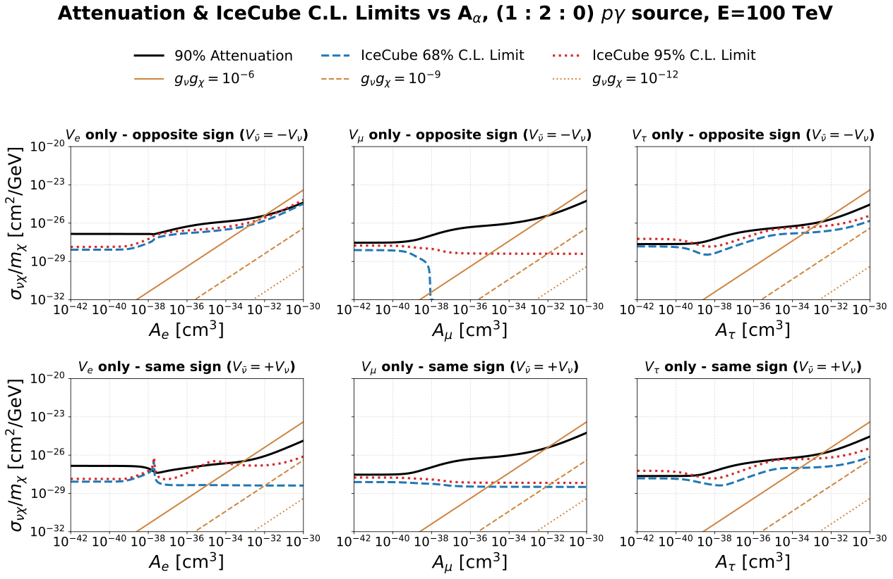
图注：100 TeV、源味比例 1∶2∶0 时，截面质量比上限随前向势参数变化。列为仅电子、缪、陶味耦合，行分别为正反中微子势异号和同号。黑线为 90% 总通量衰减，蓝、红线为 IceCube 的 68%、95% 味组成限制，橙线是轻媒介基准。
怎么看这张图：比较弱势左端的限制与右端强势转折，并留意两类判据及正反势给出不同限制。不同味的转折位置和曲线方向不能合并为同一个普适上限。 将两类限制画在同一势—截面平面上。
来源与置信度：arXiv HTML；source verified；https://arxiv.org/html/2611.09037v1/120_sigma_m_vs_A_alpha_limits_6panel.svg
4. Superorbital period evolution of Hercules X-1
- 来源：arXiv / astro-ph.HE
- 链接：https://arxiv.org/abs/2611.09801
- 作者：Abhisek Tamang, Hemanth Manikantan, Kinjal Roy, Ajith Balu, Biswajit Paul
- 公告 / 来源日期：2026-11-09
- 阅读层级：相关简报
- 评分：novelty 8/10，importance 7/10，relevance 8/10，final 8.65/10
- 推荐理由：五个X射线监视器跟踪Her X-1连续30年，量化长期超轨道周期下降及偏离二次相位轨迹的短变化，检验进动机制但仍有简并。
中文题目：Her X-1 的约 35 天超轨道周期：三十年计时中的长期下降与短期游移
问题、方法与结论：作者联合五台 X 射线监视器的约 30 年光变（MJD 49899–61155），以主亮态峰值为时标。重叠观测的各仪器共用峰时，允许亮度和宽度独立。历元折叠与观测减计算（O−C）计时分别给出周期导数约 $-5(2)$ 和 $-4.7(1)$，单位为 $10^{-5}$ 秒每秒，参考周期约 35.1 天。O−C 曲线上还存在持续 10–38 个超轨道周期的游移，局部线性段的周期可变化约 5%。
意义与贡献：这一结果把 30 年跨度内的总体下降和更短的相位摆动放到同一条曲线上。局部周期与平均计数率呈正相关，作者报告相关系数 0.73，提示应同时考虑盘结构和供给变化。周期下降本身仍无法区分倾斜盘与中子星进动。作者还用跨仪器标定后的计数率比较局部分段。该相关性依赖所选分段和观测能段，提供可跟踪的线索。较早数据没有重现简单的长期二次趋势，使观测时段成为比较进动模型的必要条件。
可借鉴之处：可复用跨仪器联合拟合同一轮主峰时间，先建立固定周期表，再检查残差的整体曲率与分段斜率。遇到低态失去可见峰时，必须同时检验不同周期计数，防止少算一圈制造长期曲率。
局限与关注点：形式误差来自特定二次拟合，但曲线明显偏离单一抛物线。纳入 1970 年起的开亮文献时刻时，作者统一加约 7 天估算主峰，并比较最长异常低态跨过 18 或 19 圈的情况。30 年趋势不宜直接外推到全部 50 年。
图 5
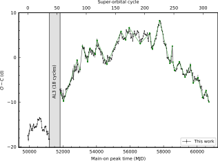
图注：Her X-1 近 30 年的主亮态峰值观测时刻减固定周期计算时刻，横轴为超轨道周期编号。绿色线为 24 个局部近线性段。
怎么看这张图：整体曲率反映长期周期趋势，局部斜率反映与固定周期的偏差。逐段比较可见单一二次项无法描述数据。横轴每增加一单位代表跨过一次约三十五天的超轨道循环。 同一时间轴同时展示长期曲率和短时摆动。
来源与置信度：arXiv HTML；source verified；https://arxiv.org/html/2611.09801v1/fig5_30yr_oc_variation.svg
5. Mathematical foundations and numerical simulations of BDNK hydrodynamics: from heavy-ion collisions to astrophysics
- 来源：arXiv / astro-ph.HE
- 链接：https://arxiv.org/abs/2611.09582
- 作者：Teerthal Patel, Henry V. Hirvonen, Fábio S. Bemfica, Marcelo M. Disconzi, Jorge Noronha, Jean-François Paquet
- 公告 / 来源日期：2026-11-09
- 阅读层级：相关简报
- 评分：novelty 8/10，importance 8/10，relevance 7/10，final 8.65/10
- 推荐理由：提出两套因果黏性流体算法及守恒/约束验证，包含黑洞吸积与环面固定背景算例，可迁移到相对论耗散模拟，摘要尚无辐射或完整磁流体应用。
中文题目：将因果黏性流体写成守恒算法：从平直激波到 Kerr 环面
问题、方法与结论：作者为 Bemfica、Disconzi、Noronha、Kovtun 的一阶相对论黏性流体理论（BDNK）给出两套通量守恒形式。第一套把时空导数变成辅助变量，用约束清理控制数值违反。第二套在时间保持一阶、在空间保留二阶，使用九个动力变量，不需旋度清理。论文在给定适用条件下论证约化与原方程的联系，并以平直激波、剪切层和弯曲背景上的标准流检验实现。
意义与贡献：弯曲时空算例从理想流体的解析定态出发。加入黏性后，Schwarzschild 球吸积与 Kerr 厚环面的能量或密度分布偏离初态。球吸积中的密度偏离依赖框架参数，所示 Kerr 环面算例对所比较的框架选择变化较小。这提供了耗散变化和数值参数敏感性两种诊断。
可借鉴之处：可复用固定度规下的守恒量演化、约束监测与解析初态验证。先在静态球和轴对称环面比较黏度、框架及网格对偏离量的影响，再决定哪些设置适合更复杂模拟，便于区分真实耗散与初值误差。还可分别报告框架参数与物理黏度，而后检查同一守恒量的收敛。
局限与关注点：天体算例使用固定黑洞背景，环面以二维截面演化，忽略自引力。密度偏离量以理想初态为参考，不能直接当作模型误差。高黏度时与 Israel–Stewart 理论的差异主要通过重离子设置检验，尚未给出黑洞吸积的辐射或磁流体预测。
图 12
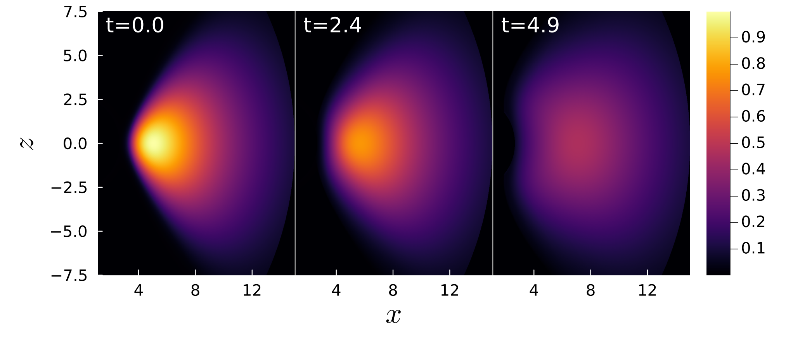
图注：Kerr 厚环面在三个标注时刻的质量密度截面，横纵坐标为笛卡尔坐标 $x,z$，颜色表示密度。采用黏度参数 $10^{-3}$，两个流体框架参数均为 $10^3$。
怎么看这张图：从第一个面板读初始环面的位置与厚度，沿时间比较密度重新分布。定量框架对照见图 13。三幅图共享同一黏性处方，颜色变化对应模拟中的密度重分配。 展示固定 Kerr 度规上的天体算例。
来源与置信度：arXiv HTML；source verified；https://arxiv.org/html/2611.09582v1/n-kerr-slices.png
6. Hydrodynamic Natal Kicks and Formation of Black Hole Binaries
- 来源：arXiv / astro-ph.HE
- 链接：https://arxiv.org/abs/2611.08604
- 作者：Edwin Santiago-Leandro, Clarissa Avilés-Niebla, Aldo Batta
- 公告 / 来源日期：2026-11-09
- 阅读层级：相关简报
- 评分：novelty 7/10，importance 7/10，relevance 8/10，final 8.35/10
- 推荐理由：四个前身星三维SPH爆发模拟，把黑洞新生踢速大小与轨道翻转所需方向、能量条件分开，可界定孤立双星负有效自旋解释。
中文题目：新生黑洞的千公里每秒踢速能否翻转双星轨道
问题、方法与结论：作者用三维光滑粒子流体力学模拟 13、21、28、34 个太阳质量的贫金属裸氦星非对称爆发，跟踪回落物质怎样继续改变新生黑洞动量。先用单星计算加瞬时失质量近似估算双星轨道，再用 800 万粒子的双星计算直接纳入伴星引力。直接模拟把 1000 km/s 初始踢速置于轨道速度反向，初期有效自旋可为负，但弱爆发的大量回落会削弱踢速并恢复轨道原方向。爆发能为束缚能 80% 的例子中，仅 13 太阳质量模型保持反向。
意义与贡献：引力波测得的有效自旋是两颗致密天体自旋在轨道角动量方向的质量加权投影。孤立双星若想通过踢速产生负值，除了踢速足够大，还要在回落结束后维持合适的轨道翻转。本文把这段短暂变化与最终状态分开，检验了瞬时近似的边界。
可借鉴之处：种群模型可先把初始踢速和方向作为爆发参数，再为回落质量及动量留出独立修正。对直接流体计算和瞬时近似同时比较轨道角动量、偏心率及并合时标，可定位哪些初始轨道不能用简单动量扣除处理。
局限与关注点：样本限于四种预设前身星和近圆紧双星，偏有利的逆向踢速也由初始化指定。更宽或初始偏心的轨道可能通过高偏心缩短并合时标。文中没有预测整个孤立双星群体形成负有效自旋的比例。
图 11
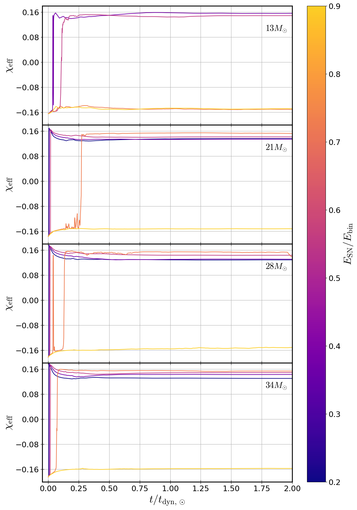
图注：四种前身质量和多组爆发能的有效自旋随模拟时间变化。伴星自旋设为 0.2，质量约为前身星的 30/28 倍，初始新生黑洞速度为 1000 km/s。
怎么看这张图：比较零线两侧的早期和后期轨迹。初始负值可能被后续回落逆转。不同质量面板在相同初始速度下仍显示不同结局。 直接展示初始踢速与最终有效自旋的差异。
来源与置信度：arXiv HTML；source verified；https://arxiv.org/html/2611.08604v1/Outputs/Binary/Effective_Spin_Parameter/all.png
7. Unlocking Pandora's Secrets: Probing the Thermodynamics of Abell 2744
- 来源：arXiv / astro-ph.HE
- 链接：https://arxiv.org/abs/2611.08847
- 作者：Randall Rojas Bolivar, Akos Bogdan, Daniel Wik, Gerrit Schellenberger
- 公告 / 来源日期：2026-11-09
- 阅读层级：相关简报
- 评分：novelty 7/10，importance 7/10，relevance 8/10，final 8.35/10
- 推荐理由：NuSTAR硬X射线联合单温/双温比较，给出A2744并合激波温度跃迁和逆康普顿通量上限，可约束弥散电子与平均磁场。
中文题目：潘多拉星系团的硬 X 射线：确认弱激波并限制逆康普顿通量
问题、方法与结论：两次 NuSTAR 观测筛除背景涨落后分别留下 127 和 54 ks。作者在 3–20 keV 用单温、双温和热谱加逆康普顿幂律比较团整体能谱，并随机扰动背景归一化做 1000 轮复拟合。双温热谱解释较好，未见显著非热分量。按幂律外推到 20–80 keV，逆康普顿通量 90% 上限为 $2.31\times10^{-12}$ erg cm$^{-2}$ s$^{-1}$。在东南边界，校正区域之间的点扩散串扰后，激波前后温度约 7.9 和 12.15 keV，推得马赫数约 1.58。
意义与贡献：多温等离子体与硬尾可在整体能谱里退化。明确比较双温热谱与热加非热谱，限制了把并合热结构误判为电子逆康普顿辐射的风险。激波马赫数与既有 Chandra 的温度和密度跃迁相容，用另一台仪器的温度测量复核了已知的东南边界。
可借鉴之处：对扩展源可复用跨区域响应矩阵，把热区散进冷区、冷区散进热区的光子分别算入联合谱。结合弥散射电同步辐射，逆康普顿上限还可转换为平均场强下限，本文得到约 0.2 微高斯。背景扰动的重复拟合还可检验幂律归一化是否只是吸收硬能段背景的变化，避免仅凭某一个最佳拟合残差作判断。
局限与关注点：逆康普顿上限依赖假定的幂律和背景，且是高于实际拟合能段的积分。磁场约束依赖两种辐射来自同类电子的假定。文中东南激波对应射电晕边界，与约 0.5 Mpc 外的遗迹激波不同，后者超出可靠测温范围。
图 7
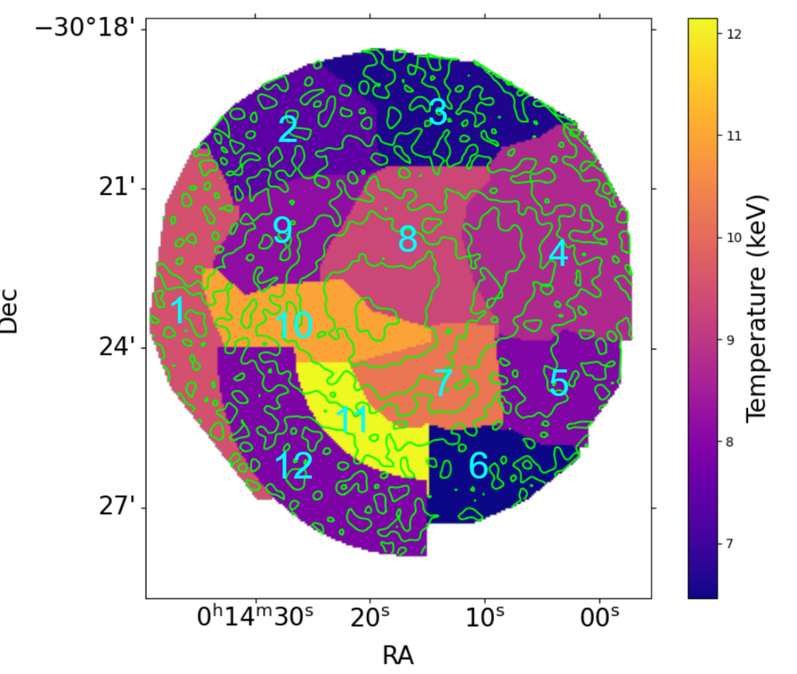
图注：NuSTAR 区域串扰响应校正后的温度分布，颜色单位为 keV，X 射线轮廓供定位。各区温度对应表 2。
怎么看这张图：对比边界两侧的 11 和 12 区，结合表 2 的误差读温度跃迁。东南边界的区域串扰已通过跨区有效面积矩阵处理。 给出马赫数推断所用的温度分布。
来源与置信度：arXiv HTML；source verified；https://arxiv.org/html/2611.08847v1/Figure7.png
8. Entanglement in Collective Neutrino Oscillations on a Quantum Computer
- 来源：arXiv / astro-ph.HE
- 链接：https://arxiv.org/abs/2611.08595
- 作者：Katarina Bleau, Nikolina Ilic, Joachim Kopp, Ushak Rahaman, Xin Yue Yu
- 公告 / 来源日期：2026-11-09
- 阅读层级：相关简报
- 评分：novelty 8/10，importance 7/10，relevance 7/10，final 8.30/10
- 推荐理由：经典和量子硬件与解析结果对照，验证特定模型大粒子数时回到平均场并列出可能失效条件；真实多角超新星介质尚未模拟。
中文题目：集体中微子振荡的量子纠缠：全互联趋于平均场，局域长相互作用可能例外
问题、方法与结论：作者用解析推导、经典多体模拟和超导量子处理器比较集体味振荡。对于全互联双模模型，粒子数增大后多体演化趋向量子动力学平均场。图 1 的两种参数下，中微子两模约在每模 300 个粒子后高度一致，中微子与反中微子的双极例约需 4000 个，反映自相互作用强度与初态的差别。量子硬件对少粒子系统复现早期演化，约十个 Trotter 分解步后噪声开始可见。
意义与贡献：将总粒子数与有效相互作用连接度拆开，有助于定位平均场近似何时可靠。在线状小系统里，若粒子主要和近邻长时间相互作用，多体结果可与平均场显著不同。一次相遇仍可产生纠缠，但在作者讨论的弱耦合下，所积累的纠缠较少。两组收敛速度不同，直接提示不能只按总粒子数判定平均场是否充分。
可借鉴之处：可以把同一个味振荡问题用全多体和平均场做受控对照，保持能谱、初态与相互作用强度口径相同，再分别改变粒子数、连接拓扑与重叠时间。数值上应将量子门噪声、时间离散误差和真正多体效应分别估计。
局限与关注点：收敛粒子数属于图中所设两模算例，并非超新星通用阈值。一维流的物理可实现性取决于中微子产地、波包长度与重叠持续时间，作者只讨论候选情境。当前硬件的小系统演示也未显示在真实多角输运上的量子优势。
图 1
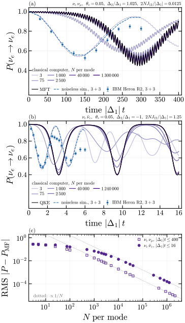
图注：黑线是平均场，紫线是经典硬件多体计算，蓝点为超导量子处理器，蓝虚线为无噪声的 Trotter 电路模拟。上、中面板分别为两味中微子和正反中微子双模算例。下面板为残差均方根随每模粒子数。
怎么看这张图：在下面板对比两组收敛尺度；上、中面板的量子点用于验证少粒子电路，并非大粒子数数据。残差是相同初态下随时间演化偏离的摘要量。 同时呈现硬件对照与平均场的粒子数收敛。
来源与置信度：arXiv HTML；source verified；https://arxiv.org/html/2611.08595v1/draft_three_panel.svg
9. GW230729_082317 and GW231118_005626: A Candidate of Hierarchical Triple Mergers
- 来源：arXiv / astro-ph.HE
- 链接：https://arxiv.org/abs/2611.09338
- 作者：Bo Gao, Shao-Peng Tang, Yi-Zhong Fan, Qingzhong Liu
- 公告 / 来源日期：2026-11-09
- 阅读层级：相关简报
- 评分：novelty 7/10，importance 7/10，relevance 7/10，final 8.00/10
- 推荐理由：可核验的一对空间和距离匹配事件给出约110贝叶斯因子，低基率后赔率约0.1，提供值得关注的关联统计和体积率上限示范。
中文题目：两次引力波是否来自接力并合：高贝叶斯因子遇到低先验率
问题、方法与结论：作者在 GWTC-4 搜索两次并合属于同一系统的候选。GW230729_082317 与 GW231118_005626 的天区定位和光度距离后验相容。以第一场遗留黑洞成为第二场成员为假设，使用含高阶模式与进动的 SEOBNRv5PHM 波形做联合参数估计。与无关联模型比较，贝叶斯因子约 110。若连续并合只占检出双黑洞事件约千分之一，后验赔率约 0.1，仍偏向无关联解释。
意义与贡献：联合分析可把第一次并合预测的遗留质量、自旋与第二次的成员联系起来。它提供了通过两次不同事件直接检验层级并合的路径，也展示了基率怎样改变对看似很高的似然证据的理解。
可借鉴之处：可复用由共同外参、遗留成员约束和成对搜索效率组成的框架。文章将候选算真和算假分别估计率。在零事件与最长时差十年等设定中，最强 90% 本地体积率上限为每立方吉秒差距每年约 4.2 次。率界须随时差分布和探测效率一起报告。若假定该对是真的且最长时差为十年，论文所扫时差斜率下的 90% 区间覆盖约 4.1–95.1；二者均以同一体积率单位计。
局限与关注点：首场未测得显著的偏心或视线加速度，这些空结果不足以单独确定环境。作者讨论致密环境散射和活动星系核盘等可能性，动力学模拟给出可行构型。约 0.1 的赔率用到示例先验，成对基率及选择函数仍待更大样本校准。
图 9
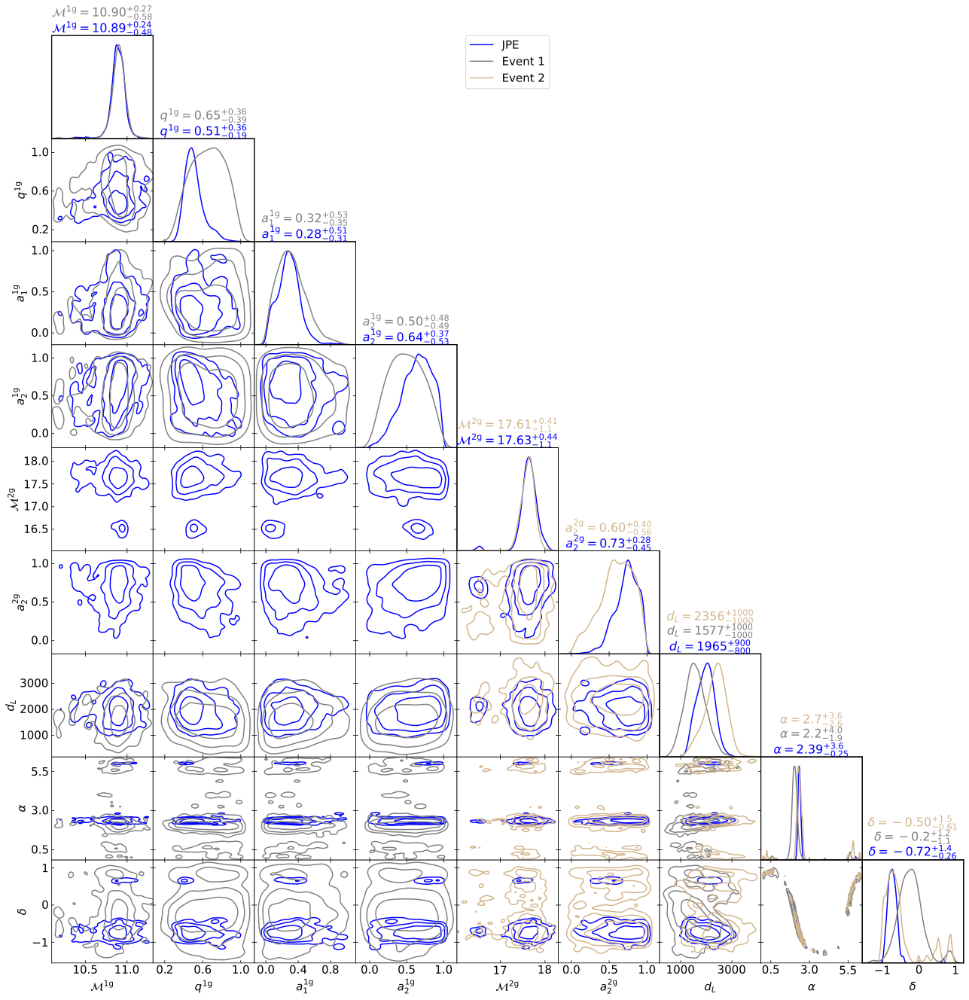
图注：联合参数估计的关键后验，包括两次并合的啁啾质量、质量比、自旋以及光度距离和赤经赤纬。上标 1g、2g 分别指第一次与第二次并合。
怎么看这张图：留意联合分析后质量、自旋区间受到假设约束，天区和距离后验重叠也可能偶然发生。联合结果依赖遗留黑洞进入第二场的假定。 展示成对关联假设下的联合后验。
来源与置信度：arXiv HTML；source verified；https://arxiv.org/html/2611.09338v1/bayes_comb.svg
10. Forecasting Fundamental-Plane Tests of Intermediate-mass Black Holes in Radio-selected Dwarf Galaxies
- 来源：arXiv / astro-ph.HE
- 链接：https://arxiv.org/abs/2611.09720
- 作者：Ramananda Santra, Samik Mitra, Shahram Abbassi
- 公告 / 来源日期：2026-11-09
- 阅读层级：相关简报
- 评分：novelty 7/10，importance 7/10，relevance 7/10，final 8.00/10
- 推荐理由：以核心探测概率替代由VLBA非检出直接反推黑洞质量，显式纳入基准面散布、光度、解析尺度和吸积态，为矮星系后续样本设计给出可复用方法。
中文题目：矮星系中等质量黑洞的射电检验：未检出时先算能探到的概率
问题、方法与结论：作者复核 13 个射电选矮星系目标的 VLA、VLBA、Chandra 与 HST 结果。VLBA 检出的四源恰是离光学中心最远的四个，提示高亮温不能保证源属于矮星系。对三个核候选，作者把硬 X 射线亮度和射电/X 射线基准面散布带入正向模型，再考虑谱指数、波束稀释与噪声。现有观测对 $10^6$ 太阳质量点源的 5 倍噪声探测概率，按目标约从 $4.9\times10^{-5}$ 到 0.17，因而射电未检出没有给出有用的质量上限。现有 VLA 尺度约百秒差距，而 VLBA 波束仅约一秒差距，两者之间的射电成分仍未被隔离。
意义与贡献：射电/X 射线基准面是经验统计关系，内禀散布接近一个数量级，且依赖紧致喷流和吸积态。文中把射电核归属、硬 X 射线成分和空间尺度分开验证，避免把低完备度误读为不存在中等质量黑洞。
可借鉴之处：可按源构造质量依赖的检测概率，再反解为指定完备度所需的均方根噪声。若 5 pc 发射在已有波束下被摊薄，三个源的峰值分别可降约 13、33、29 倍。补足中间基线和同步硬 X 射线与增加积分时间解决的是不同限制。
局限与关注点：偏移排名的概率基于随机分配检出的零假设，不能作单源背景概率。小样本及基准面拟合方向会改变预测，较低爱丁顿比是采用关系的前提。90% 完备度对应很深的极限主要反映基准面的低亮度尾部。
图 4
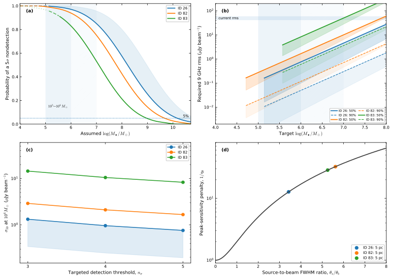
图注：左上为 5 倍噪声阈值下未检出概率随假定质量，线型区分基准面吸积态适用概率。右上为 50% 和 90% 完备度所需点源噪声，色带表示模型选择范围。左下改变阈值，右下显示源尺寸相对波束变大时的峰值损失。
怎么看这张图：左上先查现有数据对假定质量有没有约束，再用右下判断积分加深能否补足分辨率造成的信号损失。右上阴影代表模型选择范围，不能读成统计置信带。 展示未检出概率、所需灵敏度与尺寸损失。
来源与置信度：arXiv HTML；source verified；https://arxiv.org/html/2611.09720v1/fig4_imbh_forecast.svg
说明
评分由 LLM 给出初评，再由本地阈值策略过滤；IACT、TeV 伽马射线和高能中微子天文学按重点方向处理。